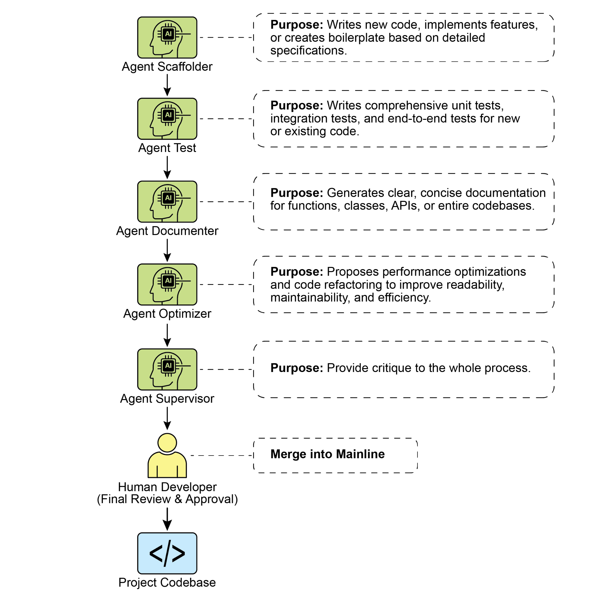

读书 · Agentic Design Patterns · 中英对照
附录 · 编码智能体 Coding Agents
Appendix G - Coding Agents: Appendix G · 《Agentic Design Patterns》 · Antonio Gulli · 2025
以人类主导编排、上下文优先、直连前沿模型为原则，组织专家编码智能体团队协作开发
← 返回导读 原书 PDF · 第417页起 上一章:第105章
本章要点
① Vibe Coding 适合快速原型与创意探索，生产级软件需结构化协作 ① 人类开发者作为编排者与架构师，始终在环并做最终质量把关 ① 按角色提示构建脚手架、测试、文档、优化、审查等专家智能体 ① 上下文暂存区、版本化提示库与 Git Hooks 将智能体工作流落地
本章一图流
Vibe Coding 探路快速原型与创意探索→人类编排架构始终在环，最终质量把关→专家智能体分工按角色提示构建脚手架等→上下文与版本化落地暂存区、提示库、Git Hooks→协作开发闭环人类主导，团队协作交付
人类主导编排，上下文优先，组织专家智能体团队协作开发。
原书插图

本章划线句
划线句(逐字校验)
"The most effective development teams are not merely delegating tasks to Agent; they are augmenting themselves with a suite of sophisticated coding agents."
为什么值得划线:点明核心范式：不是委托而是增强团队
划线句(逐字校验)
"An agent's performance is entirely dependent on the quality and completeness of its context. A powerful LLM with poor context is useless."
为什么值得划线:上下文优先原则的精辟概括
划线句(逐字校验)
"An agent's output is always a proposal, never a command."
为什么值得划线:强调人类是最终质量门，智能体输出需审核
正文(英中对照)
"Appendix G - Coding Agents Vibe Coding: A Starting Point "Vibe coding" has become a powerful technique for rapid innovation and creative exploration. This practice involves using LLMs to generate initial drafts, outline complex logic, or build quick prototypes, significantly reducing initial friction. It is invaluable for overcoming the "blank page" problem, enabling developers to quickly transition from a vague concept to tangible, runnable code. Vibe coding is particularly effective when exploring unfamiliar APIs or testing novel architectural patterns, as it bypasses the immediate need for perfect implementation."
附录 G - 编码智能体 Vibe 编码：起点 "Vibe 编码"已成为快速创新和创造性探索的强大技术。这种做法涉及使用 LLM 生成初稿、勾勒复杂逻辑或构建快速原型，显著减少初始阻力。它对于克服"空白页面"问题非常宝贵，使开发者能够快速从模糊概念过渡到有形的、可运行的代码。在探索不熟悉的 API 或测试新颖的架构模式时，Vibe 编码尤其有效，因为它绕过了对完美实现的即时需求。
导读注:Vibe 编码用 LLM 快速生成原型，助你突破"空白页面"困境。
"The generated code often acts as a creative catalyst, providing a foundation for developers to critique, refactor, and expand upon. Its primary strength lies in its ability to accelerate the initial discovery and ideation phases of the software lifecycle. However, while vibe coding excels at brainstorming, developing robust, scalable, and maintainable software demands a more structured approach, shifting from pure generation to a collaborative partnership with specialized coding agents. Agents as Team Members While the initial wave focused on raw code generation—the "vibe code" perfect for ideation—the industry is now shifting towards a more integrated and powerful paradigm for production work."
生成的代码往往充当创意催化剂，为开发者提供批判、重构和扩展的基础。其主要优势在于能够加速软件生命周期中最初的发现与构思阶段。然而，尽管 vibe coding 擅长头脑风暴，开发健壮、可扩展且可维护的软件仍需要更结构化的方法，即从纯粹的生成转向与专门的 coding agents 协作伙伴关系。作为团队成员的 Agents：尽管最初浪潮聚焦于原始代码生成——即非常适合构思的“vibe code”——但业界如今正转向一种更集成、更强大的生产工作范式。
导读注:点出 vibe coding 的定位：擅长构思，但生产级软件需转向与 coding agents 协作。
"The most effective development teams are not merely delegating tasks to Agent; they are augmenting themselves with a suite of sophisticated coding agents. These agents act as tireless, specialized team members, amplifying human creativity and dramatically increasing a team's scalability and velocity. This evolution is reflected in statements from industry leaders. In early 2025, Alphabet CEO Sundar Pichai noted that at Google, "over 30% of new code is now assisted or generated by our Gemini models, fundamentally changing our development velocity. Microsoft made a similar claim. This industry-wide shift signals that the true frontier is not replacing developers, but empowering them."
最高效的开发团队并非只是把任务委派给 Agent；他们是在用一整套精密的编码 agent 来增强自身。这些 agent 充当不知疲倦的专职团队成员，放大人类的创造力，并大幅提升团队的可扩展性与速度。这一演进体现在行业领袖的表述中。2025 年初，Alphabet CEO Sundar Pichai（桑达尔·皮查伊）指出，在 Google，"如今超过 30% 的新代码由我们的 Gemini 模型辅助或生成，从根本上改变了我们的开发速度。"Microsoft 也做出了类似表述。这一全行业的转变表明，真正的前沿不是取代开发者，而是赋能开发者。
导读注:行业巨头数据佐证：agent 是增强而非取代开发者。
"The goal is an augmented relationship where humans guide the architectural vision and creative problem-solving, while agents handle specialized, scalable tasks like testing, documentation, and review. This chapter presents a framework for organizing a human-agent team based on the core philosophy that human developers act as creative leads and architects, while AI agents function as force multipliers. This framework rests upon three foundational principles: 1. Human-Led Orchestration: The developer is the team lead and project architect. They are always in the loop, orchestrating the workflow, setting the high-level goals, and making the final decisions. The agents are powerful, but they are supportive collaborators."
目标是建立一种增强型关系：人类引导架构愿景和创造性问题解决，而智能体（agent）处理测试、文档和评审等专业化、可扩展的任务。本章提出一个基于核心理念的人类-智能体团队组织框架，即人类开发者充当创意主导者和架构师，而 AI 智能体（AI agent）则作为力量倍增器。该框架建立在三项基本原则之上：1. 人类主导的编排（Human-Led Orchestration）：开发者是团队负责人和项目架构师。他们始终在环，编排工作流、设定高层目标并做出最终决策。智能体虽然强大，但只是支持性协作者。
导读注:提出人类主导、智能体增强的团队框架，人类始终在环是核心。
"The developer directs which agent to engage, provides the necessary 1 context, and, most importantly, exercises the final judgment on any Agent-generated output, ensuring it aligns with the project's quality standards and long-term vision. 2. The Primacy of Context: An agent's performance is entirely dependent on the quality and completeness of its context. A powerful LLM with poor context is useless. Therefore, our framework prioritizes a meticulous, human-led approach to context curation. Automated, black-box context retrieval is avoided. The developer is responsible for assembling the perfect "briefing" for their Agent team member."
开发者决定调用哪个 agent、提供必要的上下文，并且最重要的是，对 agent 生成的任何输出行使最终判断权，确保其符合项目的质量标准与长期愿景。2. 上下文至上：agent 的表现完全取决于其上下文的质量与完整性。一个强大的 LLM 若上下文糟糕便毫无用处。因此，我们的框架优先采用细致、由人主导的上下文整理方法，避免自动化的黑盒上下文检索。开发者负责为其 agent 团队成员组装完美的“简报”。
导读注:强调上下文至上与人类最终判断权，反对黑盒式自动检索。
"This includes: ○ The Complete Codebase: Providing all relevant source code so the agent understands the existing patterns and logic. ○ External Knowledge: Supplying specific documentation, API definitions, or design documents. ○ The Human Brief: Articulating clear goals, requirements, pull request descriptions, and style guides. 3. Direct Model Access: To achieve state-of-the-art results, the agents must be powered by direct access to frontier models (e.g., Gemini 2.5 PRO, Claude Opus 4, OpenAI, DeepSeek, etc). Using less powerful models or routing requests through intermediary platforms that obscure or truncate context will degrade performance."
这包括：○ 完整代码库：提供所有相关源代码，使 agent 理解现有模式与逻辑。○ 外部知识：提供特定文档、API 定义或设计文档。○ 人类简报：清晰阐述目标、需求、pull request 描述与风格指南。3. 直接模型访问：为达到最先进结果，agent 必须由直接访问前沿模型（如 Gemini 2.5 PRO、Claude Opus 4、OpenAI、DeepSeek 等）驱动。使用较弱模型或通过会遮蔽或截断上下文的中间平台路由请求，将降低性能。
导读注:强调 agent 效能三要素：完整上下文、外部知识与直连前沿模型。
"The framework is built on creating the purest possible dialogue between the human lead and the raw capabilities of the underlying model, ensuring each agent operates at its peak potential. The framework is structured as a team of specialized agents, each designed for a core function in the development lifecycle. The human developer acts as the central orchestrator, delegating tasks and integrating the results. Core Components To effectively leverage a frontier Large Language Model, this framework assigns distinct development roles to a team of specialized agents. These agents are not separate applications but are conceptual personas invoked within the LLM through carefully crafted, role-specific prompts and contexts."
该框架建立在人类主导者与底层模型原始能力之间建立尽可能纯粹的对话之上，确保每个 agent 都发挥其最大潜力。该框架被组织为一个由专业化 agent 组成的团队，每个 agent 都针对开发生命周期中的一项核心职能而设计。人类开发者充当中央编排者（orchestrator），负责任务分派与结果整合。核心组件 为有效利用前沿大语言模型（Large Language Model, LLM），该框架将不同的开发角色分配给一个由专业化 agent 组成的团队。这些 agent 并非独立应用，而是通过精心设计的、角色专属的 prompt 与上下文在 LLM 内唤起的概念性人格（conceptual personas）。
导读注:点明 agent 并非独立应用，而是 LLM 内由 prompt 唤起的概念性人格。
"This approach ensures that the model's vast capabilities are precisely focused on the task at hand, from writing initial code to performing a nuanced, critical review. The Orchestrator: The Human Developer: In this collaborative framework, the human developer acts as the Orchestrator, serving as the central intelligence and ultimate authority over the AI agents. ○ Role: Team Lead, Architect, and final decision-maker."
这种方法确保模型的庞大能力被精确聚焦于当前任务，从编写初始代码到执行细致入微的批判性审查。编排者：人类开发者：在这个协作框架中，人类开发者充当编排者（Orchestrator），作为中央智能和对 AI agents 的最终权威。○ 角色：团队负责人、架构师和最终决策者。
导读注:强调人类开发者作为编排者掌控 AI agents，是协作框架的最终权威。
"The orchestrator defines tasks, prepares the context, and validates all work done by the agents. ○ Interface: The developer's own terminal, editor, and the native web UI of the chosen Agents. 2 The Context Staging Area: As the foundation for any successful agent interaction, the Context Staging Area is where the human developer meticulously prepares a complete and task-specific briefing. ○ Role: A dedicated workspace for each task, ensuring agents receive a complete and accurate briefing. ○ Implementation: A temporary directory (task-context/) containing markdown files for goals, code files, and relevant docs The Specialist Agents: By using targeted prompts, we can build a team of specialist agents, each tailored for a specific development task. ○ The Scaffolder Agent: The Implementer ■ Purpose: Writes new code, implements features, or creates boilerplate based on detailed specifications. ■ Invocation Prompt: "You are a senior software engineer."
编排器(orchestrator)负责定义任务、准备上下文,并验证 agent 完成的所有工作。○ 接口(Interface):开发者自己的终端、编辑器,以及所选 Agents 的原生 Web UI。2 上下文暂存区(Context Staging Area):作为任何成功 agent 交互的基础,上下文暂存区是开发者精心准备完整且针对具体任务简报的地方。○ 角色:为每个任务提供专属工作区,确保 agent 收到完整准确的简报。○ 实现:一个临时目录(task-context/),其中包含用于目标、代码文件和相关文档的 markdown 文件。专家 Agent(Specialist Agents):通过使用有针对性的 prompt,我们可以构建一个专家 agent 团队,每个都针对特定的开发任务量身定制。○ 脚手架 Agent(Scaffolder Agent):实现者(Implementer)■ 目的:根据详细规格编写新代码、实现功能或创建样板代码。■ 调用 Prompt:"你是一名资深软件工程师。
导读注:上下文暂存区与专家 Agent 分工是本节核心,强调为每个任务准备专属简报。
"Based on the requirements in 01_BRIEF.md and the existing patterns in 02_CODE/, implement the feature..." ○ The Test Engineer Agent: The Quality Guard ■ Purpose: Writes comprehensive unit tests, integration tests, and end-to-end tests for new or existing code. ■ Invocation Prompt: "You are a quality assurance engineer. For the code provided in 02_CODE/, write a full suite of unit tests using [Testing Framework, e.g., pytest]. Cover all edge cases and adhere to the project's testing philosophy." ○ The Documenter Agent: The Scribe ■ Purpose: Generates clear, concise documentation for functions, classes, APIs, or entire codebases. ■ Invocation Prompt: "You are a technical writer."
根据 01_BRIEF.md 中的要求和 02_CODE/ 中的现有模式，实现该功能…… ○ 测试工程师 Agent（Test Engineer Agent）：质量守卫 ■ 目的：为新代码或现有代码编写全面的单元测试、集成测试和端到端测试。 ■ 调用 prompt（Invocation Prompt）：“你是一名质量保证工程师。针对 02_CODE/ 中提供的代码，使用 [测试框架，例如 pytest] 编写一整套单元测试。覆盖所有边界情况，并遵循项目的测试理念。” ○ 文档编写 Agent（Documenter Agent）：记录者 ■ 目的：为函数、类、API 或整个代码库生成清晰、简洁的文档。 ■ 调用 prompt：“你是一名技术文档撰写者。”
导读注:展示多 Agent 分工：测试工程师与文档编写者各自的职责与调用 prompt 模板。
"Generate markdown documentation for the API endpoints defined in the provided code. Include request/response examples and explain each parameter." ○ The Optimizer Agent: The Refactoring Partner ■ Purpose: Proposes performance optimizations and code refactoring to improve readability, maintainability, and efficiency. ■ Invocation Prompt: "Analyze the provided code for performance bottlenecks or areas that could be refactored for clarity."
为所提供代码中定义的 API 端点生成 markdown 文档。包含请求/响应示例并解释每个参数。 ○ Optimizer Agent（优化器代理）：重构伙伴 ■ 目的：提出性能优化和代码重构建议，以提升可读性、可维护性和效率。 ■ 调用 Prompt（提示词）：“分析所提供的代码，找出性能瓶颈或可为了清晰性而重构的部分。
导读注:介绍 Optimizer Agent 的定位与调用 prompt，强调其重构与性能优化职责。
"Propose specific changes with explanations for why they are an improvement." ○ The Process Agent: The Code Supervisor ■ Critique: The agent performs an initial pass, identifying potential bugs, style violations, and logical flaws, much like a static analysis tool. ■ Reflection: The agent then analyzes its own critique. It synthesizes the findings, prioritizes the most critical issues, dismisses pedantic or low-impact suggestions, and provides a high-level, actionable summary for the human developer. 3 ■ Invocation Prompt: "You are a principal engineer conducting a code review. First, perform a detailed critique of the changes."
提出具体修改建议，并解释为何这些修改是改进。○ 流程代理（Process Agent）：代码监督者（Code Supervisor）■ 批评（Critique）：该代理执行初步检查，识别潜在缺陷、风格违规和逻辑缺陷，很像一个静态分析工具。■ 反思（Reflection）：该代理随后分析自己的批评。它综合发现，优先处理最关键的问题，摒弃迂腐或低影响的建议，并为人类开发者提供高层次的、可操作的总结。3 ■ 调用提示（Invocation Prompt）：“你是一位主持代码审查的首席工程师。首先，对变更进行详细的批评。
导读注:展示批评+反思双阶段代码审查代理，强调自我反思以过滤低价值建议。
"Second, reflect on your critique to provide a concise, prioritized summary of the most important feedback." Ultimately, this human-led model creates a powerful synergy between the developer's strategic direction and the agents' tactical execution. As a result, developers can transcend routine tasks, focusing their expertise on the creative and architectural challenges that deliver the most value. Practical Implementation Setup Checklist To effectively implement the human-agent team framework, the following setup is recommended, focusing on maintaining control while improving efficiency. 1. Provision Access to Frontier Models Secure API keys for at least two leading large language models, such as Gemini 2.5 Pro and Claude 4 Opus."
其次，对您的评审进行反思（Reflection），以提供最重要反馈的简明、按优先级排序的摘要。最终，这种人类主导的模式在开发者的战略方向与智能体的战术执行之间形成了强大的协同效应。因此，开发者能够超越常规任务，将专业知识聚焦于创造性和架构性挑战，从而交付最大价值。实际实施设置清单 为有效实施人类-智能体团队框架，建议进行以下设置，重点在于保持控制的同时提升效率。1. 配置前沿模型（Frontier Models）的访问权限 为至少两个领先的大语言模型（LLM）获取安全 API 密钥，例如 Gemini 2.5 Pro 和 Claude 4 Opus。
导读注:强调人类主导下战略与执行的协同，并给出接入前沿模型的具体起步建议。
"This dual-provider approach allows for comparative analysis and hedges against single-platform limitations or downtime. These credentials should be managed securely as you would any other production secret. 2. Implement a Local Context Orchestrator Instead of ad-hoc scripts, use a lightweight CLI tool or a local agent runner to manage context. These tools should allow you to define a simple configuration file (e.g., context.toml) in your project root that specifies which files, directories, or even URLs to compile into a single payload for the LLM prompt. This ensures you retain full, transparent control over what the model sees on every request. 3."
这种双提供商（dual-provider）方法支持对比分析，并能对冲单一平台的限制或停机风险。这些凭据应像对待任何其他生产密钥一样安全地管理。2. 实现本地上下文编排器（Local Context Orchestrator）：与其使用临时脚本，不如使用轻量级 CLI 工具或本地 agent runner 来管理上下文。这些工具应允许你在项目根目录定义一个简单的配置文件（例如 context.toml），指定将哪些文件、目录甚至 URL 编译为单个 payload，用于 LLM prompt。这确保你对模型在每次请求中所看到的内容保持完全、透明的控制。3.
导读注:强调双提供商对冲风险与用配置文件透明掌控 LLM 上下文。
"Establish a Version-Controlled Prompt Library Create a dedicated /prompts directory within your project's Git repository. In it, store the invocation prompts for each specialist agent (e.g., reviewer.md, documenter.md, tester.md) as markdown files. Treating your prompts as code allows the entire team to collaborate on, refine, and version the instructions given to your AI agents over time. 4. Integrate Agent Workflows with Git Hooks Automate your review rhythm by using local Git hooks. For instance, a pre-commit hook can be configured to automatically trigger the Reviewer Agent on your staged changes."
建立受版本控制的 Prompt 库：在项目的 Git 仓库中创建一个专用的 /prompts 目录。在其中，将每个专家 agent 的调用 prompt（例如 reviewer.md、documenter.md、tester.md）以 markdown 文件形式存储。将 prompt 视为代码，可以让整个团队随时间协作、改进并对提供给 AI agent 的指令进行版本控制。4. 将 Agent 工作流与 Git Hooks 集成：使用本地 Git hooks 自动化你的评审节奏。例如，可以配置一个 pre-commit hook，在暂存的更改上自动触发 Reviewer Agent。
导读注:把 prompt 当代码管理，并用 Git hook 自动触发评审，是团队协作的关键。
"The agent's critique-and-reflection summary can be presented directly in your terminal, providing immediate feedback before you finalize the commit and baking the quality assurance step directly into your development process. 4 Fig. 1: Coding Specialist Examples Principles for Leading the Augmented Team Successfully leading this framework requires evolving from a sole contributor into the lead of a human-AI team, guided by the following principles: ● Maintain Architectural Ownership Your role is to set the strategic direction and own the high-level architecture."
agent 的批评与反思总结可以直接呈现在你的终端中，在最终确定提交之前提供即时反馈，并将质量保证步骤直接融入你的开发流程。4 图 1：编码专家示例 成功领导增强团队的原则 要成功领导这一框架，需要从单一贡献者转变为人类-AI 团队的领导者，并遵循以下原则：● 保持架构所有权 你的角色是设定战略方向并拥有高层架构。
导读注:强调 agent 反馈前置到提交前，以及开发者角色向架构负责人转变。
"You define the "what" and the "why," using the agent team to accelerate the "how." You are the final arbiter of design, ensuring every component aligns with the project's long-term vision and quality standards. 5 ● Master the Art of the Brief The quality of an agent's output is a direct reflection of the quality of its input. Master the art of the brief by providing clear, unambiguous, and comprehensive context for every task. Think of your prompt not as a simple command, but as a complete briefing package for a new, highly capable team member. ● Act as the Ultimate Quality Gate An agent's output is always a proposal, never a command. Treat the Reviewer Agent's feedback as a powerful signal, but you are the ultimate quality gate."
你定义"做什么"和"为什么做",借助 agent 团队(agent team)加速"怎么做"。你是设计的最终裁决者,确保每个组件都符合项目的长期愿景与质量标准。5 ● 掌握简报的艺术(Art of the Brief):agent 的输出质量是其输入质量的直接反映。为每项任务提供清晰、无歧义且全面的上下文,以此掌握简报的艺术。把你的 prompt 视为给一位能力出众的新团队成员的一份完整简报,而非一条简单指令。● 充当最终质量关口(Ultimate Quality Gate):agent 的输出始终是提案,而非命令。把 Reviewer Agent 的反馈视为强有力的信号,但你才是最终的质量关口。
导读注:agent 输出只是提案,人始终是最终质量关口,输入质量决定输出质量。
"Apply your domain expertise and project-specific knowledge to validate, challenge, and approve all changes, acting as the final guardian of the codebase's integrity. ● Engage in Iterative Dialogue The best results emerge from conversation, not monologue. If an agent's initial output is imperfect, don't discard it—refine it. Provide corrective feedback, add clarifying context, and prompt for another attempt. This iterative dialogue is crucial, especially with the Reviewer Agent, whose "Reflection" output is designed to be the start of a collaborative discussion, not just a final report. Conclusion The future of code development has arrived, and it is augmented."
运用你的领域专业知识和项目特定知识来验证、质疑并批准所有变更，充当代码库完整性的最终守护者。● 参与迭代式对话 最佳结果源于对话，而非独白。如果 agent 的初始输出不完美，不要丢弃它——要完善它。提供纠正性反馈，补充澄清性上下文，并提示其再次尝试。这种迭代式对话至关重要，尤其是对于 Reviewer Agent（审查者 agent）而言，其 "Reflection"（反思）输出被设计为协作讨论的起点，而不仅仅是一份最终报告。结论 代码开发的未来已经到来，而且它是增强型的。
导读注:强调人类专家作为代码库最终守护者，并以迭代式对话完善 agent 输出。
"The era of the lone coder has given way to a new paradigm where developers lead teams of specialized AI agents. This model doesn't diminish the human role; it elevates it by automating routine tasks, scaling individual impact, and achieving a development velocity previously unimaginable. By offloading tactical execution to Agents, developers can now dedicate their cognitive energy to what truly matters: strategic innovation, resilient architectural design, and the creative problem-solving required to build products that delight users. The fundamental relationship has been redefined; it is no longer a contest of human versus machine, but a partnership between human ingenuity and AI, working as a single, seamlessly integrated team."
单打独斗的编码者时代已经让位于一种新范式：开发者领导由专业化 AI 智能体（Agent）组成的团队。这种模式并未削弱人的角色，反而通过自动化常规任务、放大个人影响力并实现此前难以想象的开发速度，提升了人的作用。通过将战术性执行交给智能体，开发者如今可以把认知精力投入到真正重要的事情上：战略创新、具备韧性的架构设计，以及打造令用户愉悦的产品所需的创造性问题解决。这一根本关系已被重新定义；它不再是人与机器的较量，而是人类智慧与 AI 之间的伙伴关系，作为一个无缝整合的单一团队协同工作。
导读注:开发者角色升级为 AI 团队领导者，人机关系从竞争转向协作。
"References 1. AI is responsible for generating more than 30% of the code at Google https://www.reddit.com/r/singularity/comments/1k7rxo0/ai_is_now_writing_well_over_30 _of_the_code_at/ 2. AI is responsible for generating more than 30% of the code at Microsoft https://www.businesstoday.in/tech-today/news/story/30-of-microsofts-code-is-now-ai -generated-says-ceo-satya-nadella-474167-2025-04-30 6"
参考文献 1. AI 负责生成 Google 超过 30% 的代码 https://www.reddit.com/r/singularity/comments/1k7rxo0/ai_is_now_writing_well_over_30 _of_the_code_at/ 2. AI 负责生成 Microsoft 超过 30% 的代码 https://www.businesstoday.in/tech-today/news/story/30-of-microsofts-code-is-now-ai -generated-says-ceo-satya-nadella-474167-2025-04-30 6
导读注:两大科技巨头超三成代码由 AI 生成，AI 编程渗透率值得关注。
结论 Conclusion
"Throughout this book we have journeyed from the foundational concepts of agentic AI to the practical implementation of sophisticated, autonomous systems. We began with the premise that building intelligent agents is akin to creating a complex work of art on a technical canvas—a process that requires not just a powerful cognitive engine like a large language model, but also a robust set of architectural blueprints. These blueprints, or agentic patterns, provide the structure and reliability needed to transform simple, reactive models into proactive, goal-oriented entities capable of complex reasoning and action. This concluding chapter will synthesize the core principles we have explored."
在本书中，我们从智能体 AI（agentic AI）的基础概念一路探讨到复杂自主系统的实际实现。我们一开始就提出一个前提：构建智能体就像在技术画布上创作一件复杂的艺术品——这个过程不仅需要一个强大的认知引擎（如大型语言模型，LLM），还需要一套稳健的架构蓝图。这些蓝图，即智能体模式（agentic patterns），提供了必要的结构与可靠性，从而将简单的反应式模型转变为能够进行复杂推理与行动的、主动的、目标导向的实体。本章作为结论，将综合我们已探讨的核心原则。
导读注:总结全书主线：从基础概念到自主系统实现，强调智能体模式是可靠性的关键。
"We will first review the key agentic patterns, grouping them into a cohesive framework that underscores their collective importance. Next, we will examine how these individual patterns can be composed into more complex systems, creating a powerful synergy. Finally, we will look ahead to the future of agent development, exploring the emerging trends and challenges that will shape the next generation of intelligent systems. Review of key agentic principles The 21 patterns detailed in this guide represent a comprehensive toolkit for agent development."
我们将首先回顾关键的智能体模式（agentic patterns），将它们归入一个强调其集体重要性的连贯框架中。接下来，我们将考察这些单独的模式如何组合成更复杂的系统，从而产生强大的协同效应。最后，我们将展望智能体开发的未来，探讨将塑造下一代智能系统的新兴趋势与挑战。关键智能体原则回顾 本指南详述的 21 种模式构成了一套用于智能体开发的综合工具包。
导读注:总览 21 种智能体模式，强调组合协同与未来趋势。
"While each pattern addresses a specific design challenge, they can be understood collectively by grouping them into foundational categories that mirror the core competencies of an intelligent agent. 1. Core Execution and Task Decomposition: At the most fundamental level, agents must be able to execute tasks. The patterns of Prompt Chaining, Routing, Parallelization, and Planning form the bedrock of an agent's ability to act. Prompt Chaining provides a simple yet powerful method for breaking down a problem into a linear sequence of discrete steps, ensuring that the output of one operation logically informs the next."
虽然每个模式都针对特定的设计挑战，但通过将它们归入反映智能体核心能力的基础类别，可以整体理解它们。1. 核心执行与任务分解：在最基本的层面上，智能体必须能够执行任务。Prompt Chaining、Routing、Parallelization 和 Planning 这些模式构成了智能体行动能力的基石。Prompt Chaining 提供了一种简单而强大的方法，将问题分解为离散步骤的线性序列，确保一个操作的输出逻辑上为下一个操作提供信息。
导读注:按核心能力归类模式，突出Prompt Chaining作为任务分解基石的作用。
"When workflows require more dynamic behavior, Routing introduces conditional logic, allowing an agent to select the most appropriate path or tool based on the context of the input. Parallelization optimizes efficiency by enabling the concurrent execution of independent sub-tasks, while the Planning pattern elevates the agent from a mere executor to a strategist, capable of formulating a multi-step plan to achieve a high-level objective. 1 2. Interaction with the External Environment: An agent's utility is significantly enhanced by its ability to interact with the world beyond its immediate internal state."
当工作流需要更动态的行为时，Routing（路由）引入了条件逻辑，允许 agent 根据输入的上下文选择最合适的路径或工具。Parallelization（并行化）通过支持独立子任务的并发执行来优化效率，而 Planning（规划）模式则将 agent 从单纯的执行者提升为策略家，能够制定多步计划以实现高层目标。1 2. 与外部环境的交互：agent 通过与超出其直接内部状态的世界进行交互，其效用得到显著增强。
导读注:介绍 Routing、Parallelization、Planning 三种模式，Planning 让 agent 从执行者变为策略家。
"The Tool Use (Function Calling) pattern is paramount here, providing the mechanism for agents to leverage external APIs, databases, and other software systems. This grounds the agent's operations in real-world data and capabilities. To effectively use these tools, agents must often access specific, relevant information from vast repositories. The Knowledge Retrieval pattern, particularly Retrieval-Augmented Generation (RAG), addresses this by enabling agents to query knowledge bases and incorporate that information into their responses, making them more accurate and contextually aware. 3."
工具使用（Tool Use，即 Function Calling）模式在此至关重要，它为智能体提供了利用外部 API、数据库和其他软件系统的机制。这使智能体的操作建立在真实世界的数据和能力之上。为了有效使用这些工具，智能体常常需要从庞大的存储库中访问特定的相关信息。知识检索（Knowledge Retrieval）模式，尤其是检索增强生成（Retrieval-Augmented Generation，RAG），通过使智能体能够查询知识库并将这些信息纳入其响应来解决这一问题，从而使其响应更准确且更具上下文感知能力。3.
导读注:点明工具使用与RAG如何让智能体扎根真实数据、提升准确性。
"State, Learning, and Self-Improvement: For an agent to perform more than just single-turn tasks, it must possess the ability to maintain context and improve over time. The Memory Management pattern is crucial for endowing agents with both short-term conversational context and long-term knowledge retention. Beyond simple memory, truly intelligent agents exhibit the capacity for self-improvement. The Reflection and Self-Correction patterns enable an agent to critique its own output, identify errors or shortcomings, and iteratively refine its work, leading to a higher quality final result."
状态、学习与自我改进：智能体若要执行不止于单轮的任务，就必须具备维持上下文并随时间改进的能力。记忆管理（Memory Management）模式对于赋予智能体短期对话上下文与长期知识保留能力至关重要。除简单记忆之外，真正智能的智能体还展现出自我改进的能力。反思（Reflection）与自我纠正（Self-Correction）模式使智能体能够批判自身输出、识别错误或不足，并迭代优化其工作，从而获得更高质量的最终结果。
导读注:点出智能体从记忆到自我改进的进阶能力，反思与自我纠正是质量提升关键。
"The Learning and Adaptation pattern takes this a step further, allowing an agent's behavior to evolve based on feedback and experience, making it more effective over time. 4. Collaboration and Communication: Many complex problems are best solved through collaboration. The Multi-Agent Collaboration pattern allows for the creation of systems where multiple specialized agents, each with a distinct role and set of capabilities, work together to achieve a common goal. This division of labor enables the system to tackle multifaceted problems that would be intractable for a single agent."
学习与适应（Learning and Adaptation）模式更进一步，允许智能体的行为基于反馈和经验而演化，使其随时间推移更加有效。4. 协作与沟通（Collaboration and Communication）：许多复杂问题最好通过协作来解决。多智能体协作（Multi-Agent Collaboration）模式允许创建这样的系统：多个专业化智能体各自拥有独特的角色和能力，共同协作以实现共同目标。这种分工使系统能够处理单个智能体难以应对的多方面问题。
导读注:学习与适应让智能体随经验进化，多智能体协作靠分工攻克复杂问题。
"The effectiveness of such systems hinges on clear and efficient communication, a challenge addressed by the Inter-Agent Communication (A2A) and Model Context Protocol (MCP) patterns, which aim to standardize how agents and tools exchange information. These principles, when applied through their respective patterns, provide a robust framework for building intelligent systems. They guide the developer in creating agents that are not only capable of performing complex tasks but are also structured, reliable, and adaptable."
此类系统的有效性取决于清晰高效的通信，而智能体间通信（Inter-Agent Communication, A2A）与模型上下文协议（Model Context Protocol, MCP）模式正是为应对这一挑战而提出，旨在标准化智能体与工具之间交换信息的方式。这些原则通过各自的模式加以应用时，为构建智能系统提供了稳健的框架。它们指导开发者创建这样的智能体：不仅能够执行复杂任务，而且结构清晰、可靠且适应性强。
导读注:点出 A2A 与 MCP 两大模式如何标准化通信，是构建可靠智能体系统的关键。
"Combining Patterns for Complex Systems The true power of agentic design emerges not from the application of a single pattern in isolation, but from the artful composition of multiple patterns to create 2 sophisticated, multi-layered systems. The agentic canvas is rarely populated by a single, simple workflow; instead, it becomes a tapestry of interconnected patterns that work in concert to achieve a complex objective. Consider the development of an autonomous AI research assistant, a task that requires a combination of planning, information retrieval, analysis, and synthesis."
为复杂系统组合模式 智能体设计的真正力量并非来自孤立地应用单一模式，而是来自巧妙地组合多种模式，以构建复杂、多层次的系统。智能体画布上很少只存在一个简单的工作流；相反，它会成为一幅由相互关联的模式交织而成的织锦，协同工作以实现复杂目标。试想开发一个自主 AI 研究助手（autonomous AI research assistant），这项任务需要将规划、信息检索、分析与综合结合起来。
导读注:强调智能体设计的核心在于多模式组合，而非单一模式。
"Such a system would be a prime example of pattern composition: ● Initial Planning: A user query, such as "Analyze the impact of quantum computing on the cybersecurity landscape," would first be received by a Planner agent. This agent would leverage the Planning pattern to decompose the high-level request into a structured, multi-step research plan. This plan might include steps like "Identify foundational concepts of quantum computing," "Research common cryptographic algorithms," "Find expert analyses on quantum threats to cryptography," and "Synthesize findings into a structured report." ● Information Gathering with Tool Use: To execute this plan, the agent would rely heavily on the Tool Use pattern."
这样的系统将是模式组合的典型示例：● 初始规划：用户查询（例如“分析量子计算对网络安全格局的影响”）首先由 Planner agent 接收。该 agent 会利用 Planning 模式将高层请求分解为结构化的多步研究计划。该计划可能包括“识别量子计算的基础概念”“研究常见密码算法”“查找关于量子对密码学威胁的专家分析”以及“将发现综合为结构化报告”等步骤。● 借助工具使用进行信息收集：为执行该计划，agent 将大量依赖 Tool Use 模式。
导读注:展示 Planning 与 Tool Use 模式如何组合成完整研究流程。
"Each step of the plan would trigger a call to a Google Search or vertex_ai_search tool. For more structured data, it might use tools to query academic databases like ArXiv or financial data APIs. ● Collaborative Analysis and Writing: A single agent might handle this, but a more robust architecture would employ Multi-Agent Collaboration. A "Researcher" agent could be responsible for executing the search plan and gathering raw information. Its output—a collection of summaries and source links—would then be passed to a "Writer" agent. This specialist agent, using the initial plan as its outline, would synthesize the collected information into a coherent draft. ● Iterative Reflection and Refinement: A first draft is rarely perfect."
计划的每一步都会触发对 Google Search 或 vertex_ai_search 工具的调用。对于更结构化的数据，它可能会使用工具查询 ArXiv 等学术数据库或金融数据 API。● 协作分析与写作：单个 agent 或许能处理这一环节，但更稳健的架构会采用多 Agent 协作（Multi-Agent Collaboration）。一个“Researcher”agent 可负责执行搜索计划并收集原始信息。其输出——一组摘要和来源链接——随后会传递给一个“Writer”agent。这个专家 agent 以初始计划为大纲，将收集到的信息综合成一份连贯的草稿。● 迭代式反思与精炼（Iterative Reflection and Refinement）：初稿很少是完美的。
导读注:展示从单 agent 到多 Agent 协作的架构升级，Researcher 与 Writer 分工是亮点。
"The Reflection pattern could be implemented by introducing a third "Critic" agent. This agent's sole purpose would be to review the Writer's draft, checking for logical inconsistencies, factual inaccuracies, or areas lacking clarity. Its critique would be fed back to the Writer agent, which would then leverage the Self-Correction pattern to refine its output, incorporating the feedback to produce a higher-quality final report. ● State Management: Throughout this entire process, a Memory Management system would be essential."
Reflection 模式可以通过引入第三个“Critic”（批评者）agent 来实现。该 agent 的唯一目的是审查 Writer 的草稿，检查逻辑不一致、事实不准确或缺乏清晰度的部分。其批评意见将被反馈给 Writer agent，后者随后利用 Self-Correction（自我纠正）模式来完善其输出，纳入反馈以生成更高质量的最终报告。● 状态管理：在整个过程中，一个 Memory Management（记忆管理）系统将是必不可少的。
导读注:引入 Critic agent 形成三方协作，是 Reflection 落地的关键设计。
"It would maintain the state of the research plan, store the information gathered by the Researcher, hold the drafts created by the Writer, and track the feedback from the Critic, ensuring that context is preserved across the entire multi-step, multi-agent workflow. 3 In this example, at least five distinct agentic patterns are woven together. The Planning pattern provides the high-level structure, Tool Use grounds the operation in real-world data, Multi-Agent Collaboration enables specialization and division of labor, Reflection ensures quality, and Memory Management maintains coherence."
它将维护研究计划的状态，存储 Researcher 收集的信息，保存 Writer 创建的草稿，并跟踪 Critic 的反馈，确保在整个多步骤、多智能体工作流中上下文得以保留。3 在此示例中，至少五种不同的智能体模式交织在一起。Planning 模式提供高层结构，Tool Use 将操作建立在真实世界数据之上，Multi-Agent Collaboration 实现专业化与分工，Reflection 确保质量，而 Memory Management 维持连贯性。
导读注:五种智能体模式如何在同一工作流中协同运作。
"This composition transforms a set of individual capabilities into a powerful, autonomous system capable of tackling a task that would be far too complex for a single prompt or a simple chain. Looking to the Future The composition of agentic patterns into complex systems, as illustrated by our AI research assistant, is not the end of the story but rather the beginning of a new chapter in software development. As we look ahead, several emerging trends and challenges will define the next generation of intelligent systems, pushing the boundaries of what is possible and demanding even greater sophistication from their creators. The journey toward more advanced agentic AI will be marked by a drive for greater autonomy and reasoning."
这种组合将一组单独的能力转化为一个强大的、自主的系统，能够处理对于单个 prompt 或简单链来说过于复杂的任务。展望未来，如我们的 AI 研究助手所示，将 agentic 模式组合成复杂系统并非故事的终点，而是软件开发新篇章的开端。展望前方，若干新兴趋势与挑战将定义下一代智能系统，推动可能性的边界，并要求其创造者具备更高的精巧度。迈向更先进 agentic AI 的旅程将以对更强自主性与推理能力的追求为标志。
导读注:强调组合模式把单点能力升级为自主系统，并预示更高自主性趋势。
"The patterns we have discussed provide the scaffolding for goal-oriented behavior, but the future will require agents that can navigate ambiguity, perform abstract and causal reasoning, and even exhibit a degree of common sense. This will likely involve tighter integration with novel model architectures and neuro-symbolic approaches that blend the pattern-matching strengths of LLMs with the logical rigor of classical AI. We will see a shift from human-in-the-loop systems, where the agent is a co-pilot, to human-on-the-loop systems, where agents are trusted to execute complex, long-running tasks with minimal oversight, reporting back only when the objective is complete or a critical exception occurs."
我们讨论的这些模式为目标导向行为提供了脚手架，但未来将需要能够在模糊性中导航、进行抽象与因果推理，甚至展现一定程度常识的智能体（agent）。这很可能涉及与新型模型架构和神经符号方法（neuro-symbolic approaches）的更紧密集成，后者将 LLM 的模式匹配优势与经典 AI 的逻辑严谨性相结合。我们将看到从人在回路（human-in-the-loop）系统——其中智能体是副驾驶——向人在环上（human-on-the-loop）系统的转变，在后一种系统中，智能体被信任以最少的监督执行复杂的长期任务，仅在目标完成或发生关键异常时才回报。
导读注:从副驾驶到自主执行：人在环上模式将重塑智能体的信任边界。
"This evolution will be accompanied by the rise of agentic ecosystems and standardization. The Multi-Agent Collaboration pattern highlights the power of specialized agents, and the future will see the emergence of open marketplaces and platforms where developers can deploy, discover, and orchestrate fleets of agents-as-a-service."
这一演进将伴随着智能体生态系统（agentic ecosystems）的兴起与标准化。多智能体协作（Multi-Agent Collaboration）模式凸显了专业化智能体的力量，未来将出现开放的市场与平台，开发者可在其中部署、发现并编排智能体即服务（agents-as-a-service）集群。
导读注:点出智能体生态标准化与智能体即服务市场的兴起趋势。
"For this to succeed, the principles behind the Model Context Protocol (MCP) and Inter-Agent Communication (A2A) will become paramount, leading to industry-wide standards for how agents, tools, and models exchange not just data, but also context, goals, and capabilities. 4 A prime example of this growing ecosystem is the "Awesome Agents" GitHub repository, a valuable resource that serves as a curated list of open-source AI agents, frameworks, and tools. It showcases the rapid innovation in the field by organizing cutting-edge projects for applications ranging from software development to autonomous research and conversational AI. However, this path is not without its formidable challenges."
为此，模型上下文协议（Model Context Protocol, MCP）与智能体间通信（Inter-Agent Communication, A2A）背后的原则将变得至关重要，从而催生出智能体、工具与模型之间不仅交换数据、还交换上下文、目标与能力的行业级标准。4 这一日益壮大的生态系统的典型例子是 "Awesome Agents" GitHub 仓库，它是一个宝贵资源，充当开源 AI 智能体、框架与工具的精选列表。它通过组织从软件开发到自主研究与对话式 AI 等应用的前沿项目，展示了该领域的快速创新。然而，这条道路并非没有严峻挑战。
导读注:MCP 与 A2A 将成行业标准，但生态繁荣背后挑战同样严峻。
"The core issues of safety, alignment, and robustness will become even more critical as agents become more autonomous and interconnected. How do we ensure an agent’s learning and adaptation do not cause it to drift from its original purpose? How do we build systems that are resilient to adversarial attacks and unpredictable real-world scenarios? Answering these questions will require a new set of "safety patterns" and a rigorous engineering discipline focused on testing, validation, and ethical alignment. Final Thoughts Throughout this guide, we have framed the construction of intelligent agents as an art form practiced on a technical canvas."
随着智能体变得更加自主和互联，安全、对齐和鲁棒性这些核心问题将变得更为关键。我们如何确保智能体的学习和适应不会导致其偏离最初的目标？我们如何构建能够抵御对抗性攻击和不可预测的现实世界场景的系统？回答这些问题将需要一套新的“安全模式”以及一门专注于测试、验证和伦理对齐的严谨工程学科。最后思考 在本指南中，我们将智能体的构建视为一种在技术画布上实践的艺术形式。
导读注:强调智能体自主性提升后，安全模式与工程学科成为应对偏离目标与对抗攻击的关键。
"These Agentic Design patterns are your palette and your brushstrokes—the foundational elements that allow you to move beyond simple prompts and create dynamic, responsive, and goal-oriented entities. They provide the architectural discipline needed to transform the raw cognitive power of a large language model into a reliable and purposeful system. The true craft lies not in mastering a single pattern but in understanding their interplay—in seeing the canvas as a whole and composing a system where planning, tool use, reflection, and collaboration work in harmony. The principles of agentic design are the grammar of a new language of creation, one that allows us to instruct machines not just on what to do, but on how to be."
这些智能体设计模式（Agentic Design patterns）是你的调色板和笔触——是让你超越简单 prompt、创造出动态、响应式且目标导向的实体的基础要素。它们提供了所需的架构纪律，将大型语言模型（LLM）的原始认知能力转化为可靠且有目的的系统。真正的技艺不在于掌握单一模式，而在于理解它们的相互作用——在于把画布看作一个整体，并构建一个让规划、工具使用、Reflection 和协作和谐运作的系统。智能体设计的原则是一门全新创造语言的语法，它让我们不仅能指示机器做什么，还能指示机器如何存在。
导读注:强调模式间的协同胜过单一模式，是智能体设计的核心技艺。
"The field of agentic AI is one of the most exciting and rapidly evolving domains in technology. The concepts and patterns detailed here are not a final, static dogma but a starting point—a solid foundation upon which to build, experiment, and innovate. The future is not one where we are simply users of AI, but one where we are the architects of intelligent systems that will help us solve the world’s most complex problems. The canvas is before you, the patterns are in your hands. Now, it is time to build. 5 1 Glossary Fundamental Concepts Prompt: A prompt is the input, typically in the form of a question, instruction, or statement, that a user provides to an AI model to elicit a response."
Agentic AI（智能体式人工智能）领域是技术中最令人兴奋且发展最快的领域之一。这里详述的概念与模式并非最终的、静态的教条，而是一个起点——一个用于构建、实验和创新的坚实基础。未来并非我们只是 AI 的使用者，而是我们成为智能系统的架构师，这些系统将帮助我们解决世界上最复杂的问题。画布就在你面前，模式就在你手中。现在，是时候构建了。5 1 术语表 基本概念 Prompt（提示词）：提示词是输入，通常以问题、指令或陈述的形式，由用户提供给 AI 模型以引出响应。
导读注:强调 agentic AI 是起点而非教条，呼吁读者从使用者转变为智能系统架构师。
"The quality and structure of the prompt heavily influence the model's output, making prompt engineering a key skill for effectively using AI. Context Window: The context window is the maximum number of tokens an AI model can process at once, including both the input and its generated output. This fixed size is a critical limitation, as information outside the window is ignored, while larger windows enable more complex conversations and document analysis. In-Context Learning: In-context learning is an AI's ability to learn a new task from examples provided directly in the prompt, without requiring any retraining. This powerful feature allows a single, general-purpose model to be adapted to countless specific tasks on the fly."
提示词（prompt）的质量和结构会极大影响模型的输出，这使得提示词工程成为有效使用 AI 的一项关键技能。上下文窗口（Context Window）：上下文窗口是 AI 模型一次能处理的最大 token 数量，包括输入及其生成的输出。这一固定大小是一项关键限制，因为窗口之外的信息会被忽略，而更大的窗口则能支持更复杂的对话和文档分析。上下文学习（In-Context Learning）：上下文学习是 AI 从提示词中直接提供的示例学习新任务的能力，无需任何重新训练。这一强大特性使单个通用模型能够即时适配无数特定任务。
导读注:点出提示词工程的关键地位，并解释上下文窗口与上下文学习两大核心概念。
"Zero-Shot, One-Shot, & Few-Shot Prompting: These are prompting techniques where a model is given zero, one, or a few examples of a task to guide its response. Providing more examples generally helps the model better understand the user's intent and improves its accuracy for the specific task. Multimodality: Multimodality is an AI's ability to understand and process information across multiple data types like text, images, and audio. This allows for more versatile and human-like interactions, such as describing an image or answering a spoken question. Grounding: Grounding is the process of connecting a model's outputs to verifiable, real-world information sources to ensure factual accuracy and reduce hallucinations."
零样本（Zero-Shot）、单样本（One-Shot）与少样本（Few-Shot）提示：这些是提示技术，通过给模型提供零个、一个或几个任务示例来引导其响应。提供更多示例通常有助于模型更好地理解用户意图，并提高其在特定任务上的准确性。多模态（Multimodality）：多模态是 AI 理解和处理文本、图像、音频等多种数据类型信息的能力。这允许更通用、更接近人类的交互，例如描述图像或回答口头问题。接地（Grounding）：接地是将模型输出连接到可验证的真实世界信息源的过程，以确保事实准确性并减少幻觉。
导读注:示例越多越准；多模态与接地分别解决交互广度与事实可靠性。
"This is often achieved with techniques like RAG to make AI systems more trustworthy. Core AI Model Architectures Transformers: The Transformer is the foundational neural network architecture for most modern LLMs. Its key innovation is the self-attention mechanism, which efficiently processes long sequences of text and captures complex relationships between words. Recurrent Neural Network (RNN): The Recurrent Neural Network is a foundational architecture that preceded the Transformer."
这通常通过 RAG 等技术来实现，使 AI 系统更值得信赖。核心 AI 模型架构 Transformer：Transformer 是大多数现代 LLM 的基础神经网络架构。其关键创新是自注意力机制（self-attention mechanism），它能高效处理长文本序列并捕捉词与词之间的复杂关系。循环神经网络（Recurrent Neural Network, RNN）：循环神经网络是早于 Transformer 的基础架构。
导读注:点出 Transformer 的自注意力创新及其与 RNN 的先后关系。
"RNNs process information sequentially, using loops to maintain a "memory" of previous inputs, which made them suitable for tasks like text and speech processing. 2 Mixture of Experts (MoE): Mixture of Experts is an efficient model architecture where a "router" network dynamically selects a small subset of "expert" networks to handle any given input. This allows models to have a massive number of parameters while keeping computational costs manageable. Diffusion Models: Diffusion models are generative models that excel at creating high-quality images. They work by adding random noise to data and then training a model to meticulously reverse the process, allowing them to generate novel data from a random starting point."
RNN（循环神经网络）按顺序处理信息，利用循环结构维持对先前输入的“记忆”，这使其适用于文本和语音处理等任务。2 混合专家模型（Mixture of Experts, MoE）：混合专家模型是一种高效的模型架构，其中“路由器”网络会动态选择一小部分“专家”网络来处理任意给定输入。这使得模型能够拥有海量参数，同时保持计算成本可控。扩散模型（Diffusion Models）：扩散模型是一类生成模型，擅长生成高质量图像。其工作原理是向数据添加随机噪声，然后训练模型细致地逆转这一过程，从而能够从随机起点生成新的数据。
导读注:概览RNN、MoE与扩散模型三大架构的核心机制与适用场景。
"Mamba: Mamba is a recent AI architecture using a Selective State Space Model (SSM) to process sequences with high efficiency, especially for very long contexts. Its selective mechanism allows it to focus on relevant information while filtering out noise, making it a potential alternative to the Transformer. The LLM Development Lifecycle The development of a powerful language model follows a distinct sequence. It begins with Pre-training, where a massive base model is built by training it on a vast dataset of general internet text to learn language, reasoning, and world knowledge."
Mamba：Mamba 是一种近期出现的 AI 架构，使用选择性状态空间模型（Selective State Space Model, SSM）来高效处理序列，尤其适用于超长上下文。其选择性机制使其能够聚焦相关信息并过滤噪声，使其成为 Transformer 的潜在替代方案。LLM 开发生命周期：强大语言模型的开发遵循一个明确的顺序。它始于预训练（Pre-training），即通过在庞大的通用互联网文本数据集上训练一个大规模基础模型，来学习语言、推理和世界知识。
导读注:介绍 Mamba 的选择性 SSM 机制及其作为 Transformer 替代方案的潜力，并概述 LLM 开发从预训练开始的生命周期。
"Next is Fine-tuning, a specialization phase where the general model is further trained on smaller, task-specific datasets to adapt its capabilities for a particular purpose. The final stage is Alignment, where the specialized model's behavior is adjusted to ensure its outputs are helpful, harmless, and aligned with human values. Pre-training Techniques: Pre-training is the initial phase where a model learns general knowledge from vast amounts of data. The top techniques for this involve different objectives for the model to learn from. The most common is Causal Language Modeling (CLM), where the model predicts the next word in a sentence."
接下来是微调（Fine-tuning），这是一个专业化阶段，在此阶段通用模型会在更小的、特定于任务的数据集上进一步训练，以使其能力适应特定目的。最后一个阶段是对齐（Alignment），在此阶段会调整专业化模型的行为，以确保其输出是有帮助的、无害的，并与人类价值观保持一致。预训练技术：预训练是模型从海量数据中学习通用知识的初始阶段。其顶级技术涉及让模型学习的不同目标。最常见的是因果语言建模（Causal Language Modeling, CLM），即模型预测句子中的下一个词。
导读注:概述 LLM 三阶段流程，微调与对齐的分工是理解大模型训练的关键。
"Another is Masked Language Modeling (MLM), where the model fills in intentionally hidden words in a text. Other important methods include Denoising Objectives, where the model learns to restore a corrupted input to its original state, Contrastive Learning, where it learns to distinguish between similar and dissimilar pieces of data, and Next Sentence Prediction (NSP), where it determines if two sentences logically follow each other. Fine-tuning Techniques: Fine-tuning is the process of adapting a general pre-trained model to a specific task using a smaller, specialized dataset. The most common approach is Supervised Fine-Tuning (SFT), where the model is trained on labeled examples of correct input-output pairs."
另一种是掩码语言建模（Masked Language Modeling, MLM），即模型填补文本中被故意隐藏的词。其他重要方法包括去噪目标（Denoising Objectives），模型学习将损坏的输入恢复为原始状态；对比学习（Contrastive Learning），模型学习区分相似与不相似的数据；以及下一句预测（Next Sentence Prediction, NSP），判断两个句子是否在逻辑上前后相承。微调技术：微调（Fine-tuning）是利用较小的专用数据集，将通用预训练模型适配到特定任务的过程。最常见的方法是监督微调（Supervised Fine-Tuning, SFT），即在标注好的正确输入-输出对样本上训练模型。
导读注:概览预训练与微调的关键方法，MLM、SFT等术语值得留意。
"A popular variant is Instruction Tuning, which focuses on training the model to better follow user commands. To make this process more efficient, Parameter-Efficient Fine-Tuning (PEFT) methods are used, with top techniques including LoRA (Low-Rank Adaptation), which only updates a small number of parameters, and its memory-optimized version, QLoRA. Another technique, Retrieval-Augmented Generation (RAG), enhances the model by connecting it to an external knowledge source during the fine-tuning or inference stage. 3 Alignment & Safety Techniques: Alignment is the process of ensuring an AI model's behavior aligns with human values and expectations, making it helpful and harmless."
一个流行的变体是指令微调（Instruction Tuning），其重点在于训练模型更好地遵循用户指令。为了使这一过程更高效，会使用参数高效微调（Parameter-Efficient Fine-Tuning, PEFT）方法，其中顶尖技术包括 LoRA（Low-Rank Adaptation，低秩适配），它仅更新少量参数，以及其内存优化版本 QLoRA。另一项技术是检索增强生成（Retrieval-Augmented Generation, RAG），它通过在微调或推理阶段将模型连接到外部知识源来增强模型。3 对齐与安全技术：对齐（Alignment）是确保 AI 模型行为符合人类价值观和期望、使其既有帮助又无害的过程。
导读注:概览指令微调、PEFT（LoRA/QLoRA）与 RAG，并引出对齐与安全主题。
"The most prominent technique is Reinforcement Learning from Human Feedback (RLHF), where a "reward model" trained on human preferences guides the AI's learning process, often using an algorithm like Proximal Policy Optimization (PPO) for stability. Simpler alternatives have emerged, such as Direct Preference Optimization (DPO), which bypasses the need for a separate reward model, and Kahneman-Tversky Optimization (KTO), which simplifies data collection further. To ensure safe deployment, Guardrails are implemented as a final safety layer to filter outputs and block harmful actions in real-time. Enhancing AI Agent Capabilities AI agents are systems that can perceive their environment and take autonomous actions to achieve goals."
最突出的技术是基于人类反馈的强化学习（Reinforcement Learning from Human Feedback, RLHF），其中一个基于人类偏好训练的“奖励模型”引导AI的学习过程，通常使用近端策略优化（Proximal Policy Optimization, PPO）等算法来保证稳定性。更简单的替代方案已经出现，例如直接偏好优化（Direct Preference Optimization, DPO），它绕过了对单独奖励模型的需求，以及Kahneman-Tversky优化（Kahneman-Tversky Optimization, KTO），它进一步简化了数据收集。为确保安全部署，Guardrails作为最终安全层被实施，以实时过滤输出并阻止有害操作。增强AI Agent能力 AI Agent是能够感知其环境并采取自主行动以实现目标的系统。
导读注:梳理RLHF到DPO、KTO的偏好对齐演进，并点出Guardrails作为部署安全底线。
"Their effectiveness is enhanced by robust reasoning frameworks. Chain of Thought (CoT): This prompting technique encourages a model to explain its reasoning step-by-step before giving a final answer. This process of "thinking out loud" often leads to more accurate results on complex reasoning tasks. Tree of Thoughts (ToT): Tree of Thoughts is an advanced reasoning framework where an agent explores multiple reasoning paths simultaneously, like branches on a tree. It allows the agent to self-evaluate different lines of thought and choose the most promising one to pursue, making it more effective at complex problem-solving. ReAct (Reason and Act): ReAct is an agent framework that combines reasoning and acting in a loop."
它们的有效性通过稳健的推理框架得到增强。思维链（Chain of Thought，CoT）：这种提示技术鼓励模型在给出最终答案之前逐步解释其推理过程。这种“出声思考”的过程通常能在复杂推理任务上带来更准确的结果。思维树（Tree of Thoughts，ToT）：思维树是一种高级推理框架，智能体在其中同时探索多条推理路径，就像树上的分支一样。它允许智能体自我评估不同的思路，并选择最有希望的一条继续推进，从而在复杂问题求解上更加有效。ReAct（Reason and Act，推理与行动）：ReAct 是一种将推理与行动结合在一个循环中的智能体框架。
导读注:三种推理框架并列：CoT 逐步推理、ToT 多路径探索、ReAct 推理行动循环。
"The agent first "thinks" about what to do, then takes an "action" using a tool, and uses the resulting observation to inform its next thought, making it highly effective at solving complex tasks. Planning: This is an agent's ability to break down a high-level goal into a sequence of smaller, manageable sub-tasks. The agent then creates a plan to execute these steps in order, allowing it to handle complex, multi-step assignments. Deep Research: Deep research refers to an agent's capability to autonomously explore a topic in-depth by iteratively searching for information, synthesizing findings, and identifying new questions. This allows the agent to build a comprehensive understanding of a subject far beyond a single search query."
智能体首先“思考”要做什么，然后使用工具采取“行动”，并利用由此产生的观察结果来指导其下一步思考，从而在解决复杂任务时极为高效。规划（Planning）：这是智能体将高层次目标分解为一系列更小、可管理的子任务的能力。随后，智能体制定计划按顺序执行这些步骤，使其能够处理复杂的多步骤任务。深度研究（Deep Research）：深度研究指智能体通过迭代搜索信息、综合发现并识别新问题来自主深入探索某一主题的能力。这使智能体能够对某一主题建立远超单次搜索查询的全面理解。
导读注:揭示智能体“思考—行动—观察”循环，并点出规划与深度研究两大关键能力。
"Critique Model: A critique model is a specialized AI model trained to review, evaluate, and provide feedback on the output of another AI model. It acts as an automated critic, helping to identify errors, improve reasoning, and ensure the final output meets a desired quality standard. Glossary Fundamental Concepts Prompt: A prompt is the input, typically in the form of a question, instruction, or statement, that a user provides to an AI model to elicit a response."
批评模型（Critique Model）：批评模型是一种专门训练的 AI 模型，用于审查、评估另一个 AI 模型的输出并提供反馈。它充当自动批评者，帮助识别错误、改进推理，并确保最终输出达到期望的质量标准。术语表 基本概念 提示（Prompt）：提示是用户提供给 AI 模型以引出响应的输入，通常以问题、指令或陈述的形式出现。
导读注:介绍批评模型作为自动批评者的角色，并定义基本概念提示。
"The quality and structure of the prompt heavily influence the model's output, making prompt engineering a key skill for effectively using AI. 1 Context Window: The context window is the maximum number of tokens an AI model can process at once, including both the input and its generated output. This fixed size is a critical limitation, as information outside the window is ignored, while larger windows enable more complex conversations and document analysis. In-Context Learning: In-context learning is an AI's ability to learn a new task from examples provided directly in the prompt, without requiring any retraining."
提示（prompt）的质量和结构会极大影响模型的输出，因此提示工程（prompt engineering）是有效使用 AI 的一项关键技能。1 上下文窗口（Context Window）：上下文窗口是 AI 模型一次能处理的最大 token 数，包括输入及其生成的输出。这一固定大小是一项关键限制，因为窗口之外的信息会被忽略，而更大的窗口则能支持更复杂的对话和文档分析。上下文学习（In-Context Learning）：上下文学习是 AI 从提示中直接提供的示例学习新任务的能力，无需任何重新训练。
导读注:点明提示质量决定输出，并解释上下文窗口与上下文学习两个关键概念。
"This powerful feature allows a single, general-purpose model to be adapted to countless specific tasks on the fly. 2 Zero-Shot, One-Shot, & Few-Shot Prompting: These are prompting techniques where a model is given zero, one, or a few examples of a task to guide its response. Providing more examples generally helps the model better understand the user's intent and improves its accuracy for the specific task. Multimodality: Multimodality is an AI's ability to understand and process information across multiple data types like text, images, and audio."
这一强大特性使得单个通用模型能够即时适配无数特定任务。2 零样本（Zero-Shot）、单样本（One-Shot）与少样本（Few-Shot）提示：这些是提示技术，即向模型提供零个、一个或几个任务示例来引导其响应。提供更多示例通常有助于模型更好地理解用户意图，并提高其在特定任务上的准确性。多模态（Multimodality）：多模态是 AI 理解和处理跨多种数据类型（如文本、图像和音频）信息的能力。
导读注:点出通用模型即时适配与少样本提示的增益，多模态定义值得注意。
"This allows for more versatile and human-like interactions, such as describing an image or answering a spoken question. 3 Grounding: Grounding is the process of connecting a model's outputs to verifiable, real-world information sources to ensure factual accuracy and reduce hallucinations. This is often achieved with techniques like RAG to make AI systems more trustworthy. Core AI Model Architectures Transformers: The Transformer is the foundational neural network architecture for most modern LLMs."
这使得更通用、更接近人类的交互成为可能，例如描述图像或回答口头提问。3 基础定位（Grounding）：基础定位是将模型输出连接到可验证的真实世界信息源的过程，以确保事实准确性并减少幻觉。这通常通过 RAG 等技术实现，使 AI 系统更值得信赖。核心 AI 模型架构 Transformer：Transformer 是大多数现代 LLM 的基础神经网络架构。
导读注:点出 Grounding 与 RAG 如何减少幻觉、提升可信度。
"Its key innovation is the self-attention mechanism, which efficiently processes long sequences of text and captures complex relationships between words. 4 Recurrent Neural Network (RNN): The Recurrent Neural Network is a foundational architecture that preceded the Transformer. RNNs process information sequentially, using loops to maintain a "memory" of previous inputs, which made them suitable for tasks like text and speech processing. Mixture of Experts (MoE): Mixture of Experts is an efficient model architecture where a "router" network dynamically selects a small subset of "expert" networks to handle any given input."
其关键创新是自注意力机制（self-attention mechanism），它能高效处理长文本序列并捕捉词与词之间的复杂关系。4 循环神经网络（Recurrent Neural Network, RNN）：循环神经网络是早于 Transformer 的基础架构。RNN 按顺序处理信息，利用循环维持对先前输入的“记忆”，这使其适用于文本和语音处理等任务。混合专家（Mixture of Experts, MoE）：混合专家是一种高效模型架构，其中“路由器”网络会动态选择一小部分“专家”网络来处理任意给定输入。
导读注:点出 Transformer 的自注意力创新，并对比 RNN 与 MoE 的架构差异。
"This allows models to have a massive number of parameters while keeping computational costs manageable. 5 Diffusion Models: Diffusion models are generative models that excel at creating high-quality images. They work by adding random noise to data and then training a model to meticulously reverse the process, allowing them to generate novel data from a random starting point. Mamba: Mamba is a recent AI architecture using a Selective State Space Model (SSM) to process sequences with high efficiency, especially for very long contexts. Its selective mechanism allows it to focus on relevant information while filtering out noise, making it a potential alternative to the Transformer."
这使得模型能够拥有海量参数，同时保持计算成本可控。5 扩散模型（Diffusion Models）：扩散模型是一类生成模型，擅长生成高质量图像。其工作原理是向数据中添加随机噪声，然后训练模型细致地逆转这一过程，从而能够从随机起点生成新数据。Mamba：Mamba 是一种较新的 AI 架构，使用选择性状态空间模型（Selective State Space Model, SSM）高效处理序列，尤其适用于超长上下文。其选择性机制使其能够聚焦相关信息并过滤噪声，有望成为 Transformer 的替代方案。
导读注:介绍海量参数、扩散模型与 Mamba，Mamba 或成 Transformer 替代。
"The LLM Development Lifecycle 6 The development of a powerful language model follows a distinct sequence. It begins with Pre-training, where a massive base model is built by training it on a vast dataset of general internet text to learn language, reasoning, and world knowledge. Next is Fine-tuning, a specialization phase where the general model is further trained on smaller, task-specific datasets to adapt its capabilities for a particular purpose. The final stage is Alignment, where the specialized model's behavior is adjusted to ensure its outputs are helpful, harmless, and aligned with human values. 7 Pre-training Techniques: Pre-training is the initial phase where a model learns general knowledge from vast amounts of data."
LLM 开发生命周期 6 强大语言模型的开发遵循一个独特的顺序。它始于预训练（Pre-training），即通过在庞大的通用互联网文本数据集上训练一个大规模基础模型，使其学习语言、推理和世界知识。接下来是微调（Fine-tuning），这是一个专业化阶段，通用模型在更小的、特定任务的数据集上进一步训练，以将其能力适配于特定目的。最后阶段是对齐（Alignment），即调整专业化模型的行为，以确保其输出是有帮助的、无害的，并与人类价值观保持一致。7 预训练技术：预训练是模型从海量数据中学习通用知识的初始阶段。
导读注:预训练→微调→对齐三阶段是理解 LLM 开发流程的关键框架。
"The top techniques for this involve different objectives for the model to learn from. The most common is Causal Language Modeling (CLM), where the model predicts the next word in a sentence. Another is Masked Language Modeling (MLM), where the model fills in intentionally hidden words in a text."
这方面的顶级技术涉及让模型学习的不同目标。最常见的是因果语言建模（Causal Language Modeling, CLM），即模型预测句子中的下一个词。另一种是掩码语言建模（Masked Language Modeling, MLM），即模型填补文本中故意隐藏的词。
导读注:对比 CLM 与 MLM 两种预训练目标的核心差异。
"Other important methods include Denoising Objectives, where the model learns to restore a corrupted input to its original state, Contrastive Learning, where it learns to distinguish between similar and dissimilar pieces of data, and Next Sentence Prediction 8 (NSP), where it determines if two sentences logically follow each other. 9 Fine-tuning Techniques: Fine-tuning is the process of adapting a general pre-trained model to a specific task using a smaller, specialized dataset. The most common approach is Supervised Fine-Tuning (SFT), where the model is trained on labeled examples of correct input-output pairs. A popular variant is Instruction Tuning, which focuses on training the model to better follow user commands."
其他重要方法包括去噪目标（Denoising Objectives），即模型学习将损坏的输入恢复为原始状态；对比学习（Contrastive Learning），即模型学习区分相似与不相似的数据片段；以及下一句预测（Next Sentence Prediction，NSP），即判断两个句子是否在逻辑上前后相承。9 微调技术（Fine-tuning Techniques）：微调是利用较小的专用数据集，将通用预训练模型适配到特定任务的过程。最常见的方法是监督微调（Supervised Fine-Tuning，SFT），即在标注好的正确输入-输出对样本上训练模型。一种流行的变体是指令微调（Instruction Tuning），侧重于训练模型更好地遵循用户指令。
导读注:概览去噪、对比学习、NSP 三类预训练目标，并点明 SFT 与指令微调是微调的核心方法。
"To make this process more efficient, Parameter-Efficient Fine-Tuning (PEFT) methods are used, with top techniques including LoRA (Low-Rank Adaptation), which only updates a small number of parameters, and its memory-optimized version, QLoRA. Another technique, 10 Retrieval-Augmented Generation (RAG), enhances the model by connecting it to an external knowledge source during the fine-tuning or inference stage. 11 Alignment & Safety Techniques: Alignment is the process of ensuring an AI model's behavior aligns with human values and expectations, making it helpful and harmless."
为了提高这一过程的效率，人们采用了参数高效微调（Parameter-Efficient Fine-Tuning, PEFT）方法，其中的顶级技术包括 LoRA（Low-Rank Adaptation），它只更新少量参数，以及其内存优化版本 QLoRA。另一项技术是 10 检索增强生成（Retrieval-Augmented Generation, RAG），它在微调或推理阶段将模型连接到外部知识源来增强模型。11 对齐与安全技术：对齐是确保 AI 模型行为与人类价值观和期望相一致的过程，使其既有帮助又无害。
导读注:介绍 PEFT 三大技术与对齐安全，LoRA 只更新少量参数是关键。
"The most prominent technique is Reinforcement Learning from Human Feedback (RLHF), where a "reward model" trained on human preferences guides the AI's learning process, often using an algorithm like Proximal Policy Optimization (PPO) for stability. Simpler alternatives have emerged, such as Direct Preference Optimization (DPO), which bypasses the need for a separate reward model, and Kahneman-Tversky Optimization (KTO), which simplifies data collection further. To ensure safe 12 deployment, Guardrails are implemented as a final safety layer to filter outputs and block harmful actions in real-time. Enhancing AI Agent Capabilities AI agents are systems that can perceive their environment and take autonomous actions to achieve goals."
最突出的技术是基于人类反馈的强化学习（Reinforcement Learning from Human Feedback, RLHF），其中一个基于人类偏好训练的“奖励模型”引导AI的学习过程，通常使用近端策略优化（Proximal Policy Optimization, PPO）等算法以保证稳定性。更简单的替代方案已经出现，例如直接偏好优化（Direct Preference Optimization, DPO），它无需单独的奖励模型，以及Kahneman-Tversky优化（Kahneman-Tversky Optimization, KTO），它进一步简化了数据收集。为确保安全部署，Guardrails作为最终安全层被实施，以实时过滤输出并阻止有害行为。增强AI Agent能力：AI Agent是能够感知其环境并采取自主行动以实现目标的系统。
导读注:RLHF之外，DPO与KTO正简化对齐流程；Guardrails是部署前的最后一道安全闸。
"Their effectiveness is enhanced by robust reasoning frameworks. Chain of Thought (CoT): This prompting technique encourages a model to explain its reasoning step-by-step before giving a final answer. This process of "thinking out loud" often leads to more accurate results on complex reasoning tasks. 13 Tree of Thoughts (ToT): Tree of Thoughts is an advanced reasoning framework where an agent explores multiple reasoning paths simultaneously, like branches on a tree. It allows the agent to self-evaluate different lines of thought and choose the most promising one to pursue, making it more effective at complex problem-solving. 14 ReAct (Reason and Act): ReAct is an agent framework that combines reasoning and acting in a loop."
它们的有效性通过稳健的推理框架得到增强。思维链（Chain of Thought, CoT）：这种 prompt 技术鼓励模型在给出最终答案之前逐步解释其推理过程。这种"出声思考"的过程通常能在复杂推理任务上带来更准确的结果。13 思维树（Tree of Thoughts, ToT）：思维树是一种高级推理框架，agent 在其中同时探索多条推理路径，如同树上的分支。它允许 agent 自我评估不同的思路，并选择最有希望的一条加以推进，从而在复杂问题求解上更为有效。14 ReAct（Reason and Act，推理与行动）：ReAct 是一种将推理与行动结合在循环中的 agent 框架。
导读注:三种推理框架并列：CoT 逐步推理、ToT 多路径探索、ReAct 推理行动循环。
"The agent first "thinks" about what to do, then takes an "action" using a tool, and uses the resulting observation to inform its next thought, making it highly effective at solving complex tasks. Planning: This is an agent's ability to break down a high-level goal into a sequence of smaller, manageable sub-tasks. The agent then creates a plan to execute these steps in order, allowing it to handle complex, multi-step assignments. 15 Deep Research: Deep research refers to an agent's capability to autonomously explore a topic in-depth by iteratively searching for information, synthesizing findings, and identifying new questions. This allows the agent to build a comprehensive understanding of a subject far beyond a single search query."
智能体首先“思考”要做什么，然后使用工具采取“行动”，并利用由此产生的观察结果来指导其下一步思考，从而在解决复杂任务时极为高效。规划（Planning）：这是智能体将高层次目标分解为一系列更小、可管理的子任务的能力。随后，智能体制定计划以按顺序执行这些步骤，使其能够处理复杂的多步骤任务。15 深度研究（Deep Research）：深度研究指智能体通过迭代搜索信息、综合发现并识别新问题来自主深入探索某一主题的能力。这使智能体能够对某一主题建立远超单次搜索查询的全面理解。
导读注:揭示智能体“思考—行动—观察”循环与规划、深度研究两大能力。
"Critique Model: A critique model is a specialized AI model trained to review, evaluate, and provide feedback on the output of another AI model. It acts as an automated critic, helping to identify errors, improve reasoning, and ensure the final output meets a desired quality standard. 16 Index of Terms This index of terms was generated using Gemini Pro 2.5. The prompt and reasoning steps are included at the end to demonstrate the time-saving benefits and for educational purposes."
批评模型（Critique Model）：批评模型是一种专门训练的 AI 模型，用于审查、评估另一个 AI 模型的输出并提供反馈。它充当自动批评者，帮助识别错误、改进推理，并确保最终输出达到期望的质量标准。16 术语索引 本术语索引由 Gemini Pro 2.5 生成。提示词和推理步骤附在末尾，以展示节省时间的好处并用于教育目的。
导读注:介绍批评模型作为自动批评者的角色，并说明术语索引由 Gemini Pro 2.5 生成。
"A ● A/B Testing - Chapter 3: Parallelization ● Action Selection - Chapter 20: Prioritization ● Adaptation - Chapter 9: Learning and Adaptation ● Adaptive Task Allocation - Chapter 16: Resource-Aware Optimization ● Adaptive Tool Use & Selection - Chapter 16: Resource-Aware Optimization ● Agent - What makes an AI system an Agent? ● Agent-Computer Interfaces (ACIs) - Appendix B ● Agent-Driven Economy - What makes an AI system an Agent? ● Agent as a Tool - Chapter 7: Multi-Agent Collaboration ● Agent Cards - Chapter 15: Inter-Agent Communication (A2A) ● Agent Development Kit (ADK) - Chapter 2: Routing, Chapter 3: Parallelization, Chapter 4: Reflection, Chapter 5: Tool Use, Chapter 7: Multi-Agent Collaboration, Chapter 8: Memory Management, Chapter 12: Exception Handling and Recovery, Chapter 13: Human-in-the-Loop, Chapter 15: Inter-Agent Communication (A2A), Chapter 16: Resource-Aware Optimization, Chapter 19: Evaluation and Monitoring, Appendix C ● Agent Discovery - Chapter 15: Inter-Agent Communication (A2A) ● Agent Trajectories - Chapter 19: Evaluation and Monitoring ● Agentic Design Patterns - Introduction ● Agentic RAG - Chapter 14: Knowledge Retrieval (RAG) ● Agentic Systems - Introduction ● AI Co-scientist - Chapter 21: Exploration and Discovery ● Alignment - Glossary ● AlphaEvolve - Chapter 9: Learning and Adaptation ● Analogies - Appendix A ● Anomaly Detection - Chapter 19: Evaluation and Monitoring ● Anthropic's Claude 4 Series - Appendix B ● Anthropic's Computer Use - Appendix B ● API Interaction - Chapter 10: Model Context Protocol (MCP) ● Artifacts - Chapter 15: Inter-Agent Communication (A2A) ● Asynchronous Polling - Chapter 15: Inter-Agent Communication (A2A) ● Audit Logs - Chapter 15: Inter-Agent Communication (A2A) ● Automated Metrics - Chapter 19: Evaluation and Monitoring ● Automatic Prompt Engineering (APE) - Appendix A ● Autonomy - Introduction ● A2A (Agent-to-Agent) - Chapter 15: Inter-Agent Communication (A2A) ● Callbacks - Chapter 18: Guardrails/Safety Patterns ● Causal Language Modeling (CLM) - Glossary ● Chain of Debates (CoD) - Chapter 17: Reasoning Techniques ● Chain-of-Thought (CoT) - Chapter 17: Reasoning Techniques, Appendix A ● Chatbots - Chapter 8: Memory Management ● ChatMessageHistory - Chapter 8: Memory Management ● Checkpoint and Rollback - Chapter 18: Guardrails/Safety Patterns ● Chunking - Chapter 14: Knowledge Retrieval (RAG) ● Clarity and Specificity - Appendix A ● Client Agent - Chapter 15: Inter-Agent Communication (A2A) ● Code Generation - Chapter 1: Prompt Chaining, Chapter 4: Reflection ● Code Prompting - Appendix A ● CoD (Chain of Debates) - Chapter 17: Reasoning Techniques ● CoT (Chain of Thought) - Chapter 17: Reasoning Techniques, Appendix A ● Collaboration - Chapter 7: Multi-Agent Collaboration ● Compliance - Chapter 19: Evaluation and Monitoring ● Conciseness - Appendix A ● Content Generation - Chapter 1: Prompt Chaining, Chapter 4: Reflection ● Context Engineering - Chapter 1: Prompt Chaining ● Context Window - Glossary ● Contextual Pruning & Summarization - Chapter 16: Resource-Aware Optimization ● Contextual Prompting - Appendix A ● Contractor Model - Chapter 19: Evaluation and Monitoring ● ConversationBufferMemory - Chapter 8: Memory Management ● Conversational Agents - Chapter 1: Prompt Chaining, Chapter 4: Reflection ● Cost-Sensitive Exploration - Chapter 16: Resource-Aware Optimization ● CrewAI - Chapter 3: Parallelization, Chapter 5: Tool Use, Chapter 6: Planning, Chapter 7: Multi-Agent Collaboration, Chapter 18: Guardrails/Safety Patterns, Appendix C ● Critique Agent - Chapter 16: Resource-Aware Optimization ● Critique Model - Glossary ● Customer Support - Chapter 13: Human-in-the-Loop D ● Data Extraction - Chapter 1: Prompt Chaining ● Data Labeling - Chapter 13: Human-in-the-Loop ● Database Integration - Chapter 10: Model Context Protocol (MCP) ● DatabaseSessionService - Chapter 8: Memory Management 18 ● Debate and Consensus - Chapter 7: Multi-Agent Collaboration ● Decision Augmentation - Chapter 13: Human-in-the-Loop ● Decomposition - Appendix A ● Deep Research - Chapter 6: Planning, Chapter 17: Reasoning Techniques, Glossary ● Delimiters - Appendix A ● Denoising Objectives - Glossary ● Dependencies - Chapter 20: Prioritization ● Diffusion Models - Glossary ● Direct Preference Optimization (DPO) - Chapter 9: Learning and Adaptation ● Discoverability - Chapter 10: Model Context Protocol (MCP) ● Drift Detection - Chapter 19: Evaluation and Monitoring ● Dynamic Model Switching - Chapter 16: Resource-Aware Optimization ● Dynamic Re-prioritization - Chapter 20: Prioritization E ● Embeddings - Chapter 14: Knowledge Retrieval (RAG) ● Embodiment - What makes an AI system an Agent? ● Energy-Efficient Deployment - Chapter 16: Resource-Aware Optimization ● Episodic Memory - Chapter 8: Memory Management ● Error Detection - Chapter 12: Exception Handling and Recovery ● Error Handling - Chapter 12: Exception Handling and Recovery ● Escalation Policies - Chapter 13: Human-in-the-Loop ● Evaluation - Chapter 19: Evaluation and Monitoring ● Exception Handling - Chapter 12: Exception Handling and Recovery ● Expert Teams - Chapter 7: Multi-Agent Collaboration ● Exploration and Discovery - Chapter 21: Exploration and Discovery ● External Moderation APIs - Chapter 18: Guardrails/Safety Patterns F ● Factored Cognition - Appendix A ● FastMCP - Chapter 10: Model Context Protocol (MCP) ● Fault Tolerance - Chapter 18: Guardrails/Safety Patterns ● Few-Shot Learning - Chapter 9: Learning and Adaptation ● Few-Shot Prompting - Appendix A ● Fine-tuning - Glossary ● Formalized Contract - Chapter 19: Evaluation and Monitoring ● Function Calling - Chapter 5: Tool Use, Appendix A G ● Gemini Live - Appendix B ● Gems - Appendix A ● Generative Media Orchestration - Chapter 10: Model Context Protocol (MCP) 19 ● Goal Setting - Chapter 11: Goal Setting and Monitoring ● GoD (Graph of Debates) - Chapter 17: Reasoning Techniques ● Google Agent Development Kit (ADK) - Chapter 2: Routing, Chapter 3: Parallelization, Chapter 4: Reflection, Chapter 5: Tool Use, Chapter 7: Multi-Agent Collaboration, Chapter 8: Memory Management, Chapter 12: Exception Handling and Recovery, Chapter 13: Human-in-the-Loop, Chapter 15: Inter-Agent Communication (A2A), Chapter 16: Resource-Aware Optimization, Chapter 19: Evaluation and Monitoring, Appendix C ● Google Co-Scientist - Chapter 21: Exploration and Discovery ● Google DeepResearch - Chapter 6: Planning ● Google Project Mariner - Appendix B ● Graceful Degradation - Chapter 12: Exception Handling and Recovery, Chapter 16: Resource-Aware Optimization ● Graph of Debates (GoD) - Chapter 17: Reasoning Techniques ● Grounding - Glossary ● Guardrails - Chapter 18: Guardrails/Safety Patterns H ● Haystack - Appendix C ● Hierarchical Decomposition - Chapter 19: Evaluation and Monitoring ● Hierarchical Structures - Chapter 7: Multi-Agent Collaboration ● HITL (Human-in-the-Loop) - Chapter 13: Human-in-the-Loop ● Human-in-the-Loop (HITL) - Chapter 13: Human-in-the-Loop ● Human-on-the-loop - Chapter 13: Human-in-the-Loop ● Human Oversight - Chapter 13: Human-in-the-Loop, Chapter 18: Guardrails/Safety Patterns I ● In-Context Learning - Glossary ● InMemoryMemoryService - Chapter 8: Memory Management ● InMemorySessionService - Chapter 8: Memory Management ● Input Validation/Sanitization - Chapter 18: Guardrails/Safety Patterns ● Instructions Over Constraints - Appendix A ● Inter-Agent Communication (A2A) - Chapter 15: Inter-Agent Communication (A2A) ● Intervention and Correction - Chapter 13: Human-in-the-Loop ● IoT Device Control - Chapter 10: Model Context Protocol (MCP) ● Iterative Prompting / Refinement - Appendix A J ● Jailbreaking - Chapter 18: Guardrails/Safety Patterns K ● Kahneman-Tversky Optimization (KTO) - Glossary 20 ● Knowledge Retrieval (RAG) - Chapter 14: Knowledge Retrieval (RAG) L ● LangChain - Chapter 1: Prompt Chaining, Chapter 2: Routing, Chapter 3: Parallelization, Chapter 4: Reflection, Chapter 5: Tool Use, Chapter 8: Memory Management, Chapter 20: Prioritization, Appendix C ● LangGraph - Chapter 1: Prompt Chaining, Chapter 2: Routing, Chapter 3: Parallelization, Chapter 4: Reflection, Chapter 5: Tool Use, Chapter 8: Memory Management, Appendix C ● Latency Monitoring - Chapter 19: Evaluation and Monitoring ● Learned Resource Allocation Policies - Chapter 16: Resource-Aware Optimization ● Learning and Adaptation - Chapter 9: Learning and Adaptation ● LLM-as-a-Judge - Chapter 19: Evaluation and Monitoring ● LlamaIndex - Appendix C ● LoRA (Low-Rank Adaptation) - Glossary ● Low-Rank Adaptation (LoRA) - Glossary M ● Mamba - Glossary ● Masked Language Modeling (MLM) - Glossary ● MASS (Multi-Agent System Search) - Chapter 17: Reasoning Techniques ● MCP (Model Context Protocol) - Chapter 10: Model Context Protocol (MCP) ● Memory Management - Chapter 8: Memory Management ● Memory-Based Learning - Chapter 9: Learning and Adaptation ● MetaGPT - Appendix C ● Microsoft AutoGen - Appendix C ● Mixture of Experts (MoE) - Glossary ● Model Context Protocol (MCP) - Chapter 10: Model Context Protocol (MCP) ● Modularity - Chapter 18: Guardrails/Safety Patterns ● Monitoring - Chapter 11: Goal Setting and Monitoring, Chapter 19: Evaluation and Monitoring ● Multi-Agent Collaboration - Chapter 7: Multi-Agent Collaboration ● Multi-Agent System Search (MASS) - Chapter 17: Reasoning Techniques ● Multimodality - Glossary ● Multimodal Prompting - Appendix A N ● Negative Examples - Appendix A ● Next Sentence Prediction (NSP) - Glossary O ● Observability - Chapter 18: Guardrails/Safety Patterns 21 ● One-Shot Prompting - Appendix A ● Online Learning - Chapter 9: Learning and Adaptation ● OpenAI Deep Research API - Chapter 6: Planning ● OpenEvolve - Chapter 9: Learning and Adaptation ● OpenRouter - Chapter 16: Resource-Aware Optimization ● Output Filtering/Post-processing - Chapter 18: Guardrails/Safety Patterns P ● PAL (Program-Aided Language Models) - Chapter 17: Reasoning Techniques ● Parallelization - Chapter 3: Parallelization ● Parallelization & Distributed Computing Awareness - Chapter 16: Resource-Aware Optimization ● Parameter-Efficient Fine-Tuning (PEFT) - Glossary ● PEFT (Parameter-Efficient Fine-Tuning) - Glossary ● Performance Tracking - Chapter 19: Evaluation and Monitoring ● Persona Pattern - Appendix A ● Personalization - What makes an AI system an Agent? ● Planning - Chapter 6: Planning, Glossary ● Prioritization - Chapter 20: Prioritization ● Principle of Least Privilege - Chapter 18: Guardrails/Safety Patterns ● Proactive Resource Prediction - Chapter 16: Resource-Aware Optimization ● Procedural Memory - Chapter 8: Memory Management ● Program-Aided Language Models (PAL) - Chapter 17: Reasoning Techniques ● Project Astra - Appendix B ● Prompt - Glossary ● Prompt Chaining - Chapter 1: Prompt Chaining ● Prompt Engineering - Appendix A ● Proximal Policy Optimization (PPO) - Chapter 9: Learning and Adaptation ● Push Notifications - Chapter 15: Inter-Agent Communication (A2A) Q ● QLoRA - Glossary ● Quality-Focused Iterative Execution - Chapter 19: Evaluation and Monitoring R ● RAG (Retrieval-Augmented Generation) - Chapter 8: Memory Management, Chapter 14: Knowledge Retrieval (RAG), Appendix A ● ReAct (Reason and Act) - Chapter 17: Reasoning Techniques, Appendix A, Glossary ● Reasoning - Chapter 17: Reasoning Techniques ● Reasoning-Based Information Extraction - Chapter 10: Model Context Protocol (MCP) ● Recovery - Chapter 12: Exception Handling and Recovery ● Recurrent Neural Network (RNN) - Glossary 22 ● Reflection - Chapter 4: Reflection ● Reinforcement Learning - Chapter 9: Learning and Adaptation ● Reinforcement Learning from Human Feedback (RLHF) - Glossary ● Reinforcement Learning with Verifiable Rewards (RLVR) - Chapter 17: Reasoning Techniques ● Remote Agent - Chapter 15: Inter-Agent Communication (A2A) ● Request/Response (Polling) - Chapter 15: Inter-Agent Communication (A2A) ● Resource-Aware Optimization - Chapter 16: Resource-Aware Optimization ● Retrieval-Augmented Generation (RAG) - Chapter 8: Memory Management, Chapter 14: Knowledge Retrieval (RAG), Appendix A ● RLHF (Reinforcement Learning from Human Feedback) - Glossary ● RLVR (Reinforcement Learning with Verifiable Rewards) - Chapter 17: Reasoning Techniques ● RNN (Recurrent Neural Network) - Glossary ● Role Prompting - Appendix A ● Router Agent - Chapter 16: Resource-Aware Optimization ● Routing - Chapter 2: Routing S ● Safety - Chapter 18: Guardrails/Safety Patterns ● Scaling Inference Law - Chapter 17: Reasoning Techniques ● Scheduling - Chapter 20: Prioritization ● Self-Consistency - Appendix A ● Self-Correction - Chapter 4: Reflection, Chapter 17: Reasoning Techniques ● Self-Improving Coding Agent (SICA) - Chapter 9: Learning and Adaptation ● Self-Refinement - Chapter 17: Reasoning Techniques ● Semantic Kernel - Appendix C ● Semantic Memory - Chapter 8: Memory Management ● Semantic Similarity - Chapter 14: Knowledge Retrieval (RAG) ● Separation of Concerns - Chapter 18: Guardrails/Safety Patterns ● Sequential Handoffs - Chapter 7: Multi-Agent Collaboration ● Server-Sent Events (SSE) - Chapter 15: Inter-Agent Communication (A2A) ● Session - Chapter 8: Memory Management ● SICA (Self-Improving Coding Agent) - Chapter 9: Learning and Adaptation ● SMART Goals - Chapter 11: Goal Setting and Monitoring ● State - Chapter 8: Memory Management ● State Rollback - Chapter 12: Exception Handling and Recovery ● Step-Back Prompting - Appendix A ● Streaming Updates - Chapter 15: Inter-Agent Communication (A2A) ● Structured Logging - Chapter 18: Guardrails/Safety Patterns ● Structured Output - Chapter 1: Prompt Chaining, Appendix A ● SuperAGI - Appendix C ● Supervised Fine-Tuning (SFT) - Glossary ● Supervised Learning - Chapter 9: Learning and Adaptation 23 ● System Prompting - Appendix A T ● Task Evaluation - Chapter 20: Prioritization ● Text Similarity - Chapter 14: Knowledge Retrieval (RAG) ● Token Usage - Chapter 19: Evaluation and Monitoring ● Tool Use - Chapter 5: Tool Use, Appendix A ● Tool Use Restrictions - Chapter 18: Guardrails/Safety Patterns ● ToT (Tree of Thoughts) - Chapter 17: Reasoning Techniques, Appendix A, Glossary ● Transformers - Glossary ● Tree of Thoughts (ToT) - Chapter 17: Reasoning Techniques, Appendix A, Glossary U ● Unsupervised Learning - Chapter 9: Learning and Adaptation ● User Persona - Appendix A V ● Validation - Chapter 3: Parallelization ● Vector Search - Chapter 14: Knowledge Retrieval (RAG) ● VertexAiRagMemoryService - Chapter 8: Memory Management ● VertexAiSessionService - Chapter 8: Memory Management ● Vibe Coding - Appendix B ● Visual Perception - Appendix B W ● Webhooks - Chapter 15: Inter-Agent Communication (A2A) Z ● Zero-Shot Learning - Chapter 9: Learning and Adaptation ● Zero-Shot Prompting - Appendix A 24 Prompt Below is the prompt that was utilized to create this index of terms. do you read https://docs.google.com/document/d/1rsaK53T3Lg5KoGwvf8ukOUvbELRtH-V0LnOIFDxBryE/ edit?tab=t.0 and all the related documents in the first page Please extract all the titles for each chapter. and print them."
A ● A/B 测试(A/B Testing) - 第 3 章:并行化(Parallelization) ● 动作选择(Action Selection) - 第 20 章:优先级排序(Prioritization) ● 适应(Adaptation) - 第 9 章:学习与适应(Learning and Adaptation) ● 自适应任务分配(Adaptive Task Allocation) - 第 16 章:资源感知优化(Resource-Aware Optimization) ● 自适应工具使用与选择(Adaptive Tool Use & Selection) - 第 16 章:资源感知优化(Resource-Aware Optimization) ● 智能体(Agent) - 什么使 AI 系统成为智能体? ● 智能体-计算机接口(Agent-Computer Interfaces, ACIs) - 附录 B ● 智能体驱动经济(Agent-Driven Economy) - 什么使 AI 系统成为智能体? ● 作为工具的智能体(Agent as a Tool) - 第 7 章:多智能体协作(Multi-Agent Collaboration) ● 智能体卡片(Agent Cards) - 第 15 章:智能体间通信(Inter-Agent Communication, A2A) ● 智能体开发工具包(Agent Development Kit, ADK) - 第 2 章:路由(Routing)、第 3 章:并行化(Parallelization)、第 4 章:反思(Reflection)、第 5 章:工具使用(Tool Use)、第 7 章:多智能体协作(Multi-Agent Collaboration)、第 8 章:记忆管理(Memory Management)、第 12 章:异常处理与恢复(Exception Handling and Recovery)、第 13 章:人在回路(Human-in-the-Loop)、第 15 章:智能体间通信(Inter-Agent Communication, A2A)、第 16 章:资源感知优化(Resource-Aware Optimization)、第 19 章:评估与监控(Evaluation and Monitoring)、附录 C ● 智能体发现(Agent Discovery) - 第 15 章:智能体间通信(Inter-Agent Communication, A2A) ● 智能体轨迹(Agent Trajectories) - 第 19 章:评估与监控(Evaluation and Monitoring) ● 智能体设计模式(Agentic Design Patterns) - 引言(Introduction) ● 智能体式 RAG(Agentic RAG) - 第 14 章:知识检索(Knowledge Retrieval, RAG) ● 智能体系统(Agentic Systems) - 引言(Introduction) ● AI 联合科学家(AI Co-scientist) - 第 21 章:探索与发现(Exploration and Discovery) ● 对齐(Alignment) - 术语表(Glossary) ● AlphaEvolve - 第 9 章:学习与适应(Learning and Adaptation) ● 类比(Analogies) - 附录 A ● 异常检测(Anomaly Detection) - 第 19 章:评估与监控(Evaluation and Monitoring) ● Anthropic 的 Claude 4 系列(Anthropic's Claude 4 Series) - 附录 B ● Anthropic 的计算机使用(Anthropic's Computer Use) - 附录 B ● API 交互(API Interaction) - 第 10 章:模型上下文协议(Model Context Protocol, MCP) ● 工件(Artifacts) - 第 15 章:智能体间通信(Inter-Agent Communication, A2A) ● 异步轮询(Asynchronous Polling) - 第 15 章:智能体间通信(Inter-Agent Communication, A2A) ● 审计日志(Audit Logs) - 第 15 章:智能体间通信(Inter-Agent Communication, A2A) ● 自动化指标(Automated Metrics) - 第 19 章:评估与监控(Evaluation and Monitoring) ● 自动提示工程(Automatic Prompt Engineering, APE) - 附录 A ● 自主性(Autonomy) - 引言(Introduction) ● A2A(Agent-to-Agent) - 第 15 章:智能体间通信(Inter-Agent Communication, A2A) ● 回调(Callbacks) - 第 18 章:护栏/安全模式(Guardrails/Safety Patterns) ● 因果语言建模(Causal Language Modeling, CLM) - 术语表(Glossary) ● 辩论链(Chain of Debates, CoD) - 第 17 章:推理技术(Reasoning Techniques) ● 思维链(Chain-of-Thought, CoT) - 第 17 章:推理技术(Reasoning Techniques)、附录 A ● 聊天机器人(Chatbots) - 第 8 章:记忆管理(Memory Management) ● ChatMessageHistory - 第 8 章:记忆管理(Memory Management) ● 检查点与回滚(Checkpoint and Rollback) - 第 18 章:护栏/安全模式(Guardrails/Safety Patterns) ● 分块(Chunking) - 第 14 章:知识检索(Knowledge Retrieval, RAG) ● 清晰与具体(Clarity and Specificity) - 附录 A ● 客户端智能体(Client Agent) - 第 15 章:智能体间通信(Inter-Agent Communication, A2A) ● 代码生成(Code Generation) - 第 1 章:提示链(Prompt Chaining)、第 4 章:反思(Reflection) ● 代码提示(Code Prompting) - 附录
导读注:这是全书索引片段,术语与章节对应关系是核心,翻译时须保持结构一致。
"Then process the content of all the individual chapters, and create a detailed index used for publishing, a list of words or phrases ('headings') and associated pointers ('locators') to where useful material relating to that heading can be found in a document or collection of documents. I don't want a sample index. I want the full index, with 100 index terms Gemini 2.5: Reasoning Steps Beginning Index Creation I've initiated the process by reading the Google Doc provided. Currently, I'm focusing on understanding the user's request: extracting chapter titles to build a detailed index. I'm carefully reviewing the document, looking for clear structural elements that would indicate chapter breaks."
然后处理所有各章节的内容，并创建一个用于出版的详细索引，即一个词或短语（“标题”）及其关联指针（“定位符”）的列表，指向该标题相关有用材料在文档或文档集合中的位置。我不要示例索引。我要完整索引，包含100个索引词。Gemini 2.5：推理步骤 开始创建索引 我已通过阅读提供的 Google Doc 启动该过程。目前，我正专注于理解用户的请求：提取章节标题以构建详细索引。我正在仔细审阅文档，寻找可表明章节划分的清晰结构元素。
导读注:展示 Gemini 2.5 如何分步推理并着手构建完整索引。
"I'm hoping to identify consistent formatting or keywords that will guide the indexing process. Defining Index Extraction Process I'm now fully immersed in the task. I've broken down the user's request into actionable steps. My initial focus is using Workspaces to access the main Google Doc. Following this, I'll parse the document to locate and retrieve related documents, which will also be accessed using the same tool. Finally, I will extract all chapter titles from all the documents, and create a comprehensive index. I've planned the detailed process. Refining the Extraction Strategy The user's instructions are clear: read a Google Doc, its related documents, and build a detailed index of chapter titles. I've devised a multi-step plan."
我希望识别出一致的格式或关键词，以指导索引过程。定义索引提取流程 我现在完全投入到这项任务中。我已将用户的请求分解为可执行的步骤。我最初的重点是使用 Workspaces 访问主要的 Google Doc。随后，我将解析该文档以定位并获取相关文档，这些文档也将使用同一工具访问。最后，我将从所有文档中提取所有章节标题，并创建一个全面的索引。我已规划好详细流程。优化提取策略 用户的指示很明确：读取一个 Google Doc 及其相关文档，并构建章节标题的详细索引。我已设计出一个多步骤计划。
导读注:展示如何把模糊需求拆成可执行步骤，索引提取流程是核心。
"First, Workspaces will access the main Google Doc. Then, I'll parse it to find and read related documents, also using Workspaces. I'm now focusing on extracting titles and forming the detailed index with the required terms. I'm prioritizing accuracy to meet the user's specific demands for a comprehensive index. 1 . Establish user intent: 25 I've determined the user wants a chapter title list and comprehensive index from the Google Doc and related documents. Now I need to figure out the most effective method for this extraction and indexing process. I'm exploring potential API functionalities to streamline this task, and will need to assess the best strategy for handling different document structures. 3."
首先，Workspaces 将访问主要的 Google Doc。然后，我会解析它以查找并阅读相关文档，同样使用 Workspaces。我现在专注于提取标题并形成包含所需术语的详细索引。我优先考虑准确性，以满足用户对全面索引的具体要求。1. 确立用户意图：25 我已确定用户希望从 Google Doc 及相关文档中获取章节标题列表和全面索引。现在我需要找出最有效的提取和索引方法。我正在探索潜在的 API 功能以简化此任务，并将需要评估处理不同文档结构的最佳策略。3.
导读注:展示从确定意图到探索 API 的索引构建流程，准确性优先。
"Considering Tool Use I've extracted the chapter URLs from the main document using a regular expression. Now, I'm ready to utilize Workspaces to retrieve the actual content of each chapter. Once I have the text for each chapter, I'll proceed with indexing. Accessing chapter content: I've successfully identified the URLs for each chapter from the main document, which I can now use with Workspaces. My next step is to retrieve the content from these URLs, which will then allow me to generate the index. I'm focusing on efficiency, aiming to process this information quickly. Fetching Chapter Content I've successfully identified the chapter URLs from the main document and am ready to utilize Workspaces."
考虑到工具使用（Tool Use），我已使用正则表达式从主文档中提取了章节 URL。现在，我准备利用工作区（Workspaces）来检索每个章节的实际内容。一旦获得每个章节的文本，我将继续进行索引。访问章节内容：我已成功从主文档中识别出每个章节的 URL，现在可以将它们与工作区（Workspaces）一起使用。我的下一步是从这些 URL 检索内容，然后就可以生成索引。我注重效率，目标是快速处理这些信息。获取章节内容：我已成功从主文档中识别出章节 URL，并准备利用工作区（Workspaces）。
导读注:展示工具使用流程：正则提取URL→Workspaces抓取→索引，强调效率。
"My plan involves extracting these URLs, batching the calls for efficiency, and then processing the retrieved content to create the desired index. This ensures all relevant information is captured, paving the way for a comprehensive and accurate result. Initiating URL Retrieval I've now successfully extracted the chapter URLs from the main document. Currently, I'm setting up calls to the Workspaces tool, preparing to fetch the content of each chapter. The goal is to obtain the necessary text for indexing. This information will then facilitate the creation of the index with at least 100 terms as requested."
我的计划包括提取这些 URL、为提升效率而批量发起调用，然后处理检索到的内容以创建所需的索引。这能确保捕获所有相关信息，为全面而准确的结果铺平道路。启动 URL 检索：我现在已成功从主文档中提取章节 URL。目前，我正在设置对 Workspaces 工具的调用，准备获取每一章的内容。目标是获得用于索引的必要文本。随后，这些信息将有助于按请求创建至少包含 100 个术语的索引。
导读注:展示批量调用与索引构建的流程，强调效率与信息完整性。
"Initiating Chapter Extraction I've successfully identified and extracted the chapter URLs from the main document, which I've included above. I am now proceeding to use Workspaces for each URL to obtain the chapter content. The goal is to obtain the necessary text for indexing. This information will then facilitate the creation of the index with at least 100 terms as requested. I've begun to retrieve this information. Orchestrating Chapter Retrieval 26 I've extracted the chapter URLs and initiated a call to Workspaces. I'm currently retrieving the content for each chapter. To ensure a smooth process, I'm batching the calls to prevent any rate-limiting issues. This should enable me to efficiently compile the text needed for the index."
启动章节提取 我已成功从主文档中识别并提取了章节 URL，并已将其包含在上方。我现在正着手为每个 URL 使用 Workspaces 以获取章节内容。目标是获取用于索引的必要文本。这些信息随后将有助于按请求创建包含至少 100 个术语的索引。我已开始检索这些信息。协调章节检索 26 我已提取章节 URL 并发起了对 Workspaces 的调用。我目前正在检索每个章节的内容。为确保流程顺畅，我正在对调用进行批处理以防止任何速率限制问题。这应使我能够高效地汇编索引所需的文本。
导读注:批处理调用避免速率限制，是高效抓取章节内容的关键策略。
"Decoding User Request I've determined the user's need. They require two primary deliverables: first, a comprehensive list of chapter titles extracted from Google Docs, and second, a detailed index containing a minimum of one hundred key terms. The process of extracting titles seems straightforward, while curating the index will involve more nuanced analysis. Extracting Titles and Indexing I've successfully identified the user's need: extracting chapter titles from the provided documents and compiling a comprehensive index. I've fetched the content of 31 Google Docs, including the main document and its chapters. I've confirmed that no additional tools are needed."
解码用户请求 我已确定用户的需求。他们需要两项主要交付物：第一，从 Google Docs 中提取的章节标题的完整列表；第二，包含至少一百个关键术语的详细索引。提取标题的过程似乎很直接，而策划索引将涉及更细致的分析。提取标题与编制索引 我已成功识别用户的需求：从提供的文档中提取章节标题并编制一份全面的索引。我已获取 31 个 Google Docs 的内容，包括主文档及其各章节。我已确认不需要额外的工具。
导读注:展示 AI 拆解需求、抓取 31 份文档并确认无需额外工具的执行过程。
"My plan involves two steps: first, extracting chapter titles from the document filenames, and second, meticulously processing the text to build the index with key terms and chapter locators. Developing an Extraction Plan I've refined my approach to tackle the user's request. I've now formulated a precise plan. Firstly, I will compile the chapter titles from the filenames of the 31 fetched documents. Secondly, and more complexly, I will meticulously analyze the content to create a comprehensive, alphabetically ordered index exceeding 100 entries. I have finalized my extraction and indexing strategy and can now commence execution. Crafting the Extraction Strategy My approach is well-defined."
我的计划包含两个步骤：首先，从文档文件名中提取章节标题；其次，细致处理文本，以构建包含关键术语和章节定位符的索引。制定提取计划 我已完善了处理用户请求的方法。现在我已制定出精确的计划。首先，我将从已获取的31份文档的文件名中整理出章节标题。其次，更为复杂的是，我将细致分析内容，以创建一个按字母顺序排列、条目超过100条的全面索引。我已最终确定提取与索引策略，现在可以开始执行。制定提取策略 我的方法已明确界定。
导读注:展示从文件名提取标题到构建超100条索引的两步策略，强调细致处理。
"I will compile chapter titles from the filenames of the 31 fetched documents. Subsequently, I'll analyze the content meticulously to construct an alphabetically organized index exceeding 100 entries. I've finalized the extraction and indexing strategy and can now commence implementation. The user's goal of a detailed index, covering content from diverse chapters and appendices within the Agentic Design Patterns series, is now within reach. I'll focus on delivering a thorough response, going beyond a mere sample index. Defining the Approach I've clarified the user's need. I will extract chapter titles from the document filenames."
我将从已获取的 31 份文档的文件名中整理出章节标题。随后，我会细致分析内容，构建一个按字母顺序组织、条目超过 100 条的索引。我已最终确定提取与索引策略，现在可以开始实施。用户希望获得一份详细索引，覆盖 Agentic Design Patterns 系列中不同章节与附录的内容，这一目标现已触手可及。我将专注于提供一份详尽的回复，而不只是示例索引。定义方法：我已明确用户需求。我将从文档文件名中提取章节标题。
导读注:从文件名提取章节标题，构建超 100 条字母索引，强调详尽交付而非示例。
"Following that, I will carefully create an index exceeding 100 entries, arranging them 27 alphabetically and noting their chapter locations. I am prepared to begin the indexing and extraction process. 28"
随后，我将精心创建一个超过100个条目的索引，按字母顺序排列这27个条目，并注明它们所在的章节位置。我已准备好开始索引和提取过程。28
导读注:强调超过100个条目的索引创建与字母排序，注意末尾数字28可能为编号。
来源与用途
《Agentic Design Patterns》,Antonio Gulli · 2025 · 原书 PDF。本页为学习用途的对照整理,版权归原作者;有问题到读书导师处提问,答案只引用书中原文并标注章节。